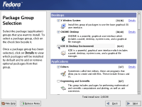
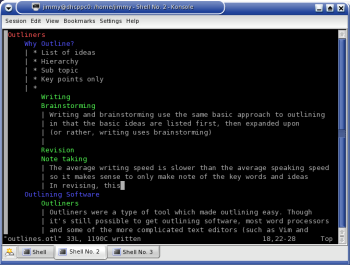
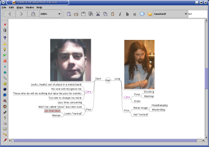

My name is Jeff Rohloff, and I am the IT manager of the detention center
here in Las Vegas, NV. I am involved in a project that uses Oracle DB
and application servers. We have investigated the deployment of this
app on a server running Linux, and have been very excited what we have
found so far. We have presented this to the executive staff and they
too are excited. My last hurdle is do a risk assessment of the
deployment of Linux into our environment that is primarily Microsoft.
Do you know of a site, or do you have info that you maybe able to share
that might help me put this document together. Thanks in advance..
This is extremely situation
dependent. You should at least ensure that the people that'll be using
this database are trained to do so.
-- Thomas
In my experience, Oracle in a mixed Windows/Linux environment works
quite well. I recently taught a class on Linux implementation at the
CapitalOne bank headquarters where they're converting to exactly that
setup. Their tech people were highly positive in their reactions to my
questions about the integration process; it eliminated several of the
problems they'd experienced under Wind0ws (I can't recall exactly what
the former problems were, but they had something to do with failing to
service a query during high traffic periods.)
You're definitely not riding the bleeding edge with this; many companies
have implemented this configuration by now, and you could certainly
benefit from their experience. Oracle themselves probably have case
studies on file that you could examine, although it may require a bit of
digging and prodding.
-- Ben
Perhaps our readers could point out some specific resources that Jeff
could use while making his decision about their Oracle setup.
But it does raise a neat idea for an article. The core of any good
advocacy (in my not too humble opinion) is the ability to take the
other viewpoint(s) and examine all the data from a broader perspective
- what will really serve the needs best from the options available.
Soooo... a good article on risk analysis, itself, with managers like
Jeff and businesses in mind, would be a welcome sight. Any takers?
Read our Author Guidelines - then contact our articles@ staff.
-- Heather
Sorry if we're a bit light on the tips this month, folks.
As mentioned in a past issue, people have been asking us for more Tips that
are the little bitty tidbits you can nibble on, the quick answer, the really
handy pencil to tuck in your Linux pocket. Some of our meatier tips come
from The Answer Gang, maybe a little too meaty for some tastes. The fact is
the very best of the tidbit-style Two Cent Tips come from you, dear readers...
Send 'em in! mail your tip to tag@lists.linuxgazette.net. Ideally, they aren't
faq's, aren't obvious (until you see them, at least), but give you a "wow!
I wish I'd known that a few weeks ago" feeling.
Thu, 21 Oct 2004 08:48:02 -0400
linuxham (linuxham from wowway.com)
Answered By Raj Shekhar, Thomas Adam, Mike Orr, Jason Creighton
Debian, ahhh Debian. Don't care about any cutesy install, easy enough IMHO.
[Mike]
I managed to stay out of this thread so far because the author is so
closed-minded, but just to set the facts straight, Gentoo's install is
less cutesy than Debian. No curses dialogs to guide you through.
There is one little dialog program you can run to configure the network,
but it's optional. Everything else is done by hand the old-fashioned way
or by running little console programs. What more do you want?
[Jason]
Alternatively phrased, what less do you want?
For instance, the only thing in the Crux install that doesn't happen on
the command line is a curses-based package selection program. Everything
else (creating the target filesystem, mounting it, installing a
bootloader if you need to, etc.) you did yourself.
Which, oddly enough, I found to be simpler than trying to figure out how
someone else designed an installer.
I had not realized that Gentoo had a minimal install. Sounds like I
might like it. (If only I had the bandwidth...)
[Mike]
Gentoo is not the first or only compile-it-yourself distro, but it
happens to be the one that's supported enough to make a lot of
first-time compile-distro users try it out. So it's creating a
"market" for a different kind of distribution. Something like that
deserves press coverage. Will it remain in that privileged position
forever? Probably not. I first encountered Red Hat some months after
it appeared when a guy recommended it saying, "These guys actually test
their distribution." RH brought a new level of quality control to
Linux, which SuSE and others then stepped up to compete with. No doubt
other distros modelled after BSD ports will appear too, and the binary
distros may start focusing more on their (already existing) option of
letting users install from source if they wish.
Rock Linux is another compile-it-yourself distro, and last time I looked
at it, it had an install similar to Gentoo's. You might also look at
Slackware, which is more simplistic than Debian (and I mean that in a
good way), although it's more cutesy than Gentoo.
Gonna stick with it because
1. It is FREE, never gonna have to pay for it in any way, really a strange concept...
[Mike]
Gentoo is free, and Rock and Slackware and Fedora and...
[Raj]
...so is the Mandrake Community Edition (it lacks the
acrobat reader, crossover office and other proprietary stuff)
2. APT works sooo well. Just install Woody base, set sources to testing, and invoke aptget ugrade dist to get Sarge installed. Then aptget for whatever else over the net
[sic] folks. Debian's actual command (to do mass upgrades without breaking holds or allowing package removals for apps that changed drastically) is:
apt-get upgrade dist
-- Heather
[Raj]
You can do that with yum too. MDK provides rpmuri (might have got the
name wrong). I am surprised that people still complain about the RPM
dependency hell. Then there are some people who can run apt on redhat
too, but I have not looked at it.
[Mike]
Debian can justly be proud of its pioneering work in distro technology.
It was the first distro to create a package searcher/downloader like
apt, a program many of the RPM-based distros have now adopted. Debian
was also the first with individually-upgradeable packages (the dpkg
system), although rpm came out not long after. I think Debian was also
the first distro with dependencies.
But these all must be weighed against the much larger set of quirky
Debian technologies and policies which have not been universally
adopted. Debian has very specific and complicated policies for how
software must be packaged, which files go where, how the application
must behave, etc -- these policies fill two whole books (the Debian
Policy Manual, the Developer's Reference, and we should add the New
Maintainer's Guide and the smaller doucments: Emacs policy, Perl policy,
Spelling Dictionaries and Tools policy, etc). These provide a steep
learning curve for package maintainers, as well as for those who just
want to use dpkg for their own private software. Automated tools exist
now to help with this, but they do so much magic it can be hard to
figure out what all they're doing. Last time I tried to build a
package, you even had to make a PGP key to sign it with, as if that's
necessary for private packages. All this complication regularly results
in (1) Debian packages with broken dependencies: e.g., packages that
depend on themselves, packages that depend on packages that don't exist,
(2) lots of fixer releases to get the minutae of the policies correct,
(3) months or years between releases, and (4) several-month periods
where you can't install two favorite packages simultaneously because one
uses a newer version of a library than the other. Debian was my primary
OS for nine years, so I've had lots of experience with this. When a
package is broken, you have to decide whether it's worth spending
several hours fixing the package, or spending the same several hours
building the upstream software locally and waiting for Debian to catch
up. The latter is fine for really standalone programs, but it's a pain
if it's a library or program that lots of other packages depend on.
3. When Sarge goes maninstream, gonna set cron to update automatically any
packages that get security fixes.
[Raj]
Again yum can be made to run from cron too.
Do not want to start a distro-flamewar, but yes most distros do provide
a very decent method of upgrading/installing packages now. And some
utils do provide means to manage source installs too. (checkinstall is
one from the top of my head). Linux is out of the dark ages now
Not that I recommend letting cron change how production systems work - or don't - every night. brrrrrr... I have enough cares when upgrading while a sysadmin is present.
-- Heather
[Mike]
That may be safe with Debian Stable, but you definitely don't want to do
that with Unstable or you may wake up to a hosed computer. I would
never let any distro automatically upgrade packages without me being on
hand to monitor for problems, not unless I'd had success with that same
package version on other computers, but if you really want to, you can
put "emerge sync" and "emerge world" in Gentoo's cron too.
can the others boast these wonderful qualities? Not sure I care, but it would
be good to know. I installed Suse, and about went to the bathroom to retch
when I realized I had installed a proprietary system. It is still there on my
hd, but I haven't used it.
[Mike]
Some of us are like Linus: we care less if our computer is 100%
politically correct than if it has the software we need. I strongly
prefer free software, but the BSD license is good enough for me; I don't
need GPL (or Lignux). And I'm not against installing RealAudio or Wing
IDE/Komodo or a semi-commercial office suite if there's no adequate free
alternative.
[Jason]
I don't understand this. The BSD license has less restrictions on use
than the GPL. Could you please elaborate?
[Mike]
Bad wording on my part. The GPL fanatics think the BSD license has holes big
enough to drive a proprietary truck through. Users can make closed-source
derivatives of BSD-licensed products, and that really gets the free
software purists' goat.
As an example, last week in LWN there as an article
(http://lwn.net/Articles/106353) about Jeff Merkey's (ex-Novell) offer
to buy a BSD-style license for a certain version of Linux (assuming
all the kernel copyright holders were locatable and agreed, which is
about as likely as Ben Okopnik selling you a bridge in Brooklyn). That
would allow Microsoft to incorporate portions of Linux into Windows if
it desired. There are rumors MS already did this with BSD code, in
Windows 95's TCP stack and telnet/FTP utilities. Does that bother me?
No, I'm just glad they borrowed quality code rather than using whatever
homemade crap they might have come up with otherwise. Actually, what
I care more about is compatibility and interoperability, and borrowed
code at MS has a better track record in that regard than homemade stuff.
I've made some contributions to Cheetah (http://cheetatemplate.org),
a template system for Python, which has a BSD-style license. So nothing
is keeping MS from using Cheetah in MS Office or making a commercial
Cheetah derivative. Does that bother me? No, I thought about that
before I released the code. Their making money off it doesn't hinder me
from using it for free, and I'm glad if it gets wider use, that's why I
wrote it.
Back to answering our reader...
-- Heather
[Mike]
Why didn't you realize SuSE was "proprietary" before you installed it?
It's hardly a secret that its closed-source install/upgrade tools are
what make SuSE SuSE. (Or does SuSE provide the source somewhere? RH
provides the source to all its tools.) Or are you referring to the
third-party software SuSE bundles with a one-user license, software
which completely optional and in no way required for a functional SuSE
system?
[Jason]
nods What works, works. I'm don't use free softcare because it's free
("free" in the "free speech" sense of the word), I use it because it
isn't broken.
Thanks for the great articles!!
Ed
Thanks, Ed. It's always good to hear from our readers.
I was really tempted not to pub this. It's lively, but our Gang aren't
really argumentative with each other about our choices, we just know
how to enjoy a juicy debate. We know there are fans out there for
every distro. Each one's got its good points, some of those are even
much the same. And for others, "good" is in the mind of the beholder.
For users who crave the lumbar support that sitting in the driver's seat
of a commercial distro brings, we seem to have more of those every year.
A few of us will continue to enjoy our hot rods and race around in the
desert of really new software, trusting our experience to be our roll
bars, and expecting - some even enjoying the chance - to hit a few
potholes now and then. Open source gives us that choice.
In spite of my recent hardware problems, there's been a very pleasant
and positive change in my computing experience over the past few months;
namely, the amount of spam that I have to "handle" (i.e., false
positives and negatives) has gone to nearly zero. I wanted to mention it
here, since Neil's article was responsible for getting me started down
this path.
Here's the snapshot of what it took:
1. Followed the recommendations in the article, all except DNS
blocklists. Biggest surprise: the amount I could reduce the spam point
threshold (currently at 3.0) without any resulting false positives. I
could probably go even lower...
2. Training the Bayesian filter on the odd false negatives became
trivial once I set up the Mutt macros:
macro index \eb "|sa-learn --spam^M"
macro pager \eb "|sa-learn --spam^M"
Other than that, I've built up its database by dumping my spambox into
it when it exceeds 100 emails:
sa-learn --spam --mbox /var/mail/spam
3. Whitelisted those of my friends who routinely BCC mails to me.
As a result of all of the above, plus a very simple procmail recipe -
other than basic sorting into my various mailboxes, it considers as spam
anything that is not sent to one of my valid addresses - the last 1000
emails have resulted in 0 false positives and 2 false negatives. Given
that 57%+ of the total (so says a quick analysis of my
/var/log/procmail) was spam, those are pretty impressive results.
Thanks for the initial push, Neil!
[Neil]
I'm pleased to have been some help.
A couple of things I've learnt since I posted the article.
SpamAssassin has a maximum database size and frequently expires tokens in the
database, so the database won't grow too large. this size can be tuned with
the bayes_expiry_max_db_size setting in the configuration. The value seems
to be the number of tokens, rather a size in bytes.
If you've misclassified something and you need to relearn it there's no need
to use sa-learn --forget. If you've classified ham as spam, sa-learn --spam
will automatically forget the learning as ham when told to learn it as spam
and vice-versa.
[Mike]
Good to know, I've been meaning to look at SA's scoring more closely.
My ISP recently went to rejecting mail with more than fifty recipients in
the headers, and that alone cut down my spam by 75%. They also use
Postini, but there was a huge shrinkage in my Postini spambox after they
did this. As in, down from a thousand messages a month to fifty.
Re: How to Reset forgotten Root passwords
Fri, 22 Oct 2004 21:18:07 -0400
Suramya Tomar (LG Article Author)
Additional Info from Ihar 'Philips' Filipau (filia from softhome.net)
Got this email from Philips with some additional information about my
article in LG 107 on how to reset root passwords. He talks about a
special case where the process I described wouldn't work.
He has graciously give me permission to share this with you and since I
think you might find this interesting I am cc'ing this to the TAG.
What do you think, would it be too hard to reset passwords on SELinux?
- Suramya
[Ben]
Nope. Just as you would pass "init=/bin/bash" or whatever on the command
line, you could pass "selinux=0" to completely disable the SELinux
features. You said it in your article: "physical access equals root
access."
Sure, there are things you can do that would definitely prevent somebody
from modifying your /etc/shadow - a large rusty axe vigorously applied
to the hard drive comes to mind (encrypting the entire HD would be a
close modern equivalent) - but we're talking about very rare exceptions.
People who run specialized secured systems but haven't built up a kit of
tools to take care of the now-different set of problems have only
themselves to blame, while the rest of us laugh at them.
Thing here, it wasn't something specialized, but rather normal setup
of Fedora Core 2.
People didn't knew a thing about SELinux, besides /promotion/ on RH
site that FC2 is secure as it wasn't ever before. Then just realized
week later that they have forgotten root password. I did precisely what
you have said with 'init=/bin/bash' (I beleive selinux=0 was a default,
/etc/rc.d/rc was activativating and configuring SELinux before anything
else - it has a flag in /etc/sysconfig) and after reboot no-one was
able to login into system.
Everything worked Ok with disabled SELinux.
If any-one wants to make a correction to article, best of all is to
warn users that some security systems a-la SELinux do store checksums on
files, what can make file unaccessible if it was changes outside of
given security system. To make file accessible again they will need to
consult manuals on how to do that.
Hi,
Thanks for emailing me with this info. I haven't yet tried SELinux so
I wasn't aware of this problem. Apparently whats happening is that
changing the password file trips a checksum or something in SELinux
stoping people from hacking the system.
I think it would still be possible to get past it by disabling SELinux
at statup, changing the password and then do a proper password reset and
then activate SELinux. We could also try edting the sudo file to give a
particular user su rights and then use that login to change the root
password.
You would not do that on system, where you do care about security. Wouldn't you?
Would you mind if I posted your comments on my site as followup on the
article? I will of-course credit you for it but I think that this info
would be useful to others also. I would also like to post this to the LG
TAG mailing list so that they know about this too and who knows this
might show up in next months LG as reader feedback.
Do what ever you like at your discretion.
Spell checking is welcome
* Boot into single-user mode (easiest, least risky)
* Boot using a boot disk and edit the password file
* Mount the drive on another computer and edit the password file
On SELinux enabled system, all this methods will make system unusable.
Have had negative experience with on one of the Fedoras - due to
some kind of bug/feature, SELinux was refusing to accept foreignly
modified /etc/passwd - no-one was able to read /etc/passwd. I believe
that was one of the problems why Fedora removed SELinux from default
installation.
I cannot be sure how to fix that, since I didn't manage to repair
those Fedora. Fedora's FAQ has command to repair file label (whatever it
is called in SELinux, used to track file modifications) - but it was
failing for me. Another option was to turn off SELinux, but I
(mischieviously) used this problem as reason to /upgrade/ system to
SuSE And it worked
Re: stunnel article in the Linux Gazette
Sat, 23 Oct 2004 20:11:30 +0100
Barry O'Donovan (LG Article Author)
Additional Info from Michal Trojnara (Michal.Trojnara from mirt.net)
Hey guys,
When ever I write an article on something I usually send an e-mail to
the developers/maintainers/webmasters/etc of whatever I write about
letting them know it's on the Gazette in case they wish to link to it.
In the case of last months stunnel I e-mailed the author of stunnel
(Michal Trojnara) to which he replied below (and gave his permission to
have it reproduced in Mailbag if Heather so wishes).
Michal Trojnara, Saturday 23 October 2004 19:31
Barry,
Your article is just great. It's very clear and easy for beginners.
Some hints could possibly be added like:
- disabling the Nagle algorithm for improved performance
- creating special user/group just for stunnel instead of nobody
Best regards,
Mike
[Barry]
By the way: Nagle's algorithm is used to decrease the number of packets
sent over a connection by buffering smaller messages so that only a
single packet will be transmitted instead of one for each message.
Although "nagling" addresses some network problems it can be
undesirable in highly interactive environments.
Thanks again for your comments Mike - and your permission to print.
Kind regards,
Barry
[Ben]
Nice! I always like getting the comments "from the horse's
mouth"; much like historical research using primary sources, it has good
solid authority behind it. Thanks for forwarding it, Barry - it'll make
a nice Mailbag item (and adds the benefit of knowing that your article
was vetted by *the* expert.)
It's actually a really good idea in general, on reflection. I've added
it, as a suggestion (original idea credited to you) to the bottom of the
author FAQ.
and rejoice as javascript-enabled browsers are provided with a list of
articles from the current issue of Linux Gazette.
Comments, complaints, etc. are welcome.
Nice, Jimmy. This might be something to note in, what, Gazette
Matters? Our adoring fans will want to know. Might be worth adding right
after your RDF, etc. notes on the front page, too.
-- Ben
It's added there too, now. Thanks Jimmy!
-- Heather
This page edited and maintained by the Editors of Linux Gazette HTML script maintained by Heather Stern of Starshine Technical Services, http://www.starshine.org/
The Answer Gang
Linux Gazette 108: The Answer Gang (TWDT)The Answer Gang 108:
...making Linux just a little more fun!
The Answer Gang By Jim Dennis, Karl-Heinz Herrmann, Breen, Chris, and...
(meet the Gang) ...
the Editors of Linux Gazette...
and
You!
We have guidelines for asking and answering questions. Linux questions only, please.
We make no guarantees about answers, but you can be anonymous on request. See also: The Answer Gang's
Knowledge Base
and the LGSearch Engine
Greetings, and welcome once again to the world of The Answer Gang, give
or take that incredible moon we have spinning round it. If you missed the
lunar
eclipse I'm sorry to hear it, the time in shadow looks only a smidge
brighter than a new moon, and the red penumbra is... well, if you're a
Peanuts fan I
suppose the Great Pumpkin really did rise over the patch this year, only a
few days off.
Far from being the "final frontier" in the space of open source,
A trip to freshmeat.net's
Astronomy topic shows
more cool apps for astronomy fans than you can spot with a telescope.
The night may be an ephemeral thing, but I say go enjoy it sometime this
month. Look outward, upward, and remember there's a reason your cellphone
works, we can get IRC in half our deserts, and ships actually get to where
they're going while carrying the trade goods of all nations.
Politics aside, it's a smaller world than we think. We could use a few more
of them, but so far, it's the only one we've got. Sharing's a good thing -
and the typical open sorceror knows this without thinking about it. I'm glad
we've a few juicy threads to share with you this month. Enjoy!
Automatically selecting matched lines.
From Thomas Adam
Answered By: Tim Chase
This is a question that I posted to the Vim mailing-list. Tim Chase was
kind enough to reply, and in some detail, so it ends up here. Thanks, Tim!
-- Thomas Adam
Hello, all -
I'm trying to get Vim to automatically select (hilight) lines in a file
that start with a particular phrase. Basically, I want it then to run a
command over the selected text. Doing this manually is not a problem, but
I am having a lot of trouble trying to automate it.
I was under the impression that "V%" is what I was after, yet each time I
try it, Vim responds with: "V% is not an editor command". I'm overlooking
something, but what?
[Tim]
I don't think Vim supports disjoint selecting like what I
understand you want to do...in a single pass. However, each
disjoint piece can be passed to your external program if you
want. Perhaps something like:
:g/^\s*\n>/+,/^>\@!/-1! extern_command
Broken down, that's:
:g on every line that matches
^\s*\n> an empty line followed by a ">" on the next line
+ begin a range on the next line (the one with the ">")
, through
/^>\@!/ the next line that doesn't begin with a ">"
-1 adjust the 2nd range argument to be the previous line
because the previous search found the next line that
doesn't have a leading ">" so we have to backup a line
! pass the contents of the range through
external_command and replace the original contents with the
output of "external_command"
Thus, if you wanted to make your quotations in the mail-file all
sound like B1FF (assuming you have the bsd-games collection
installed), you could do
:g/^\s*\n>/+,/^>\@!/-1! b1ff
Any Ex command can take the place of "! b1ff" there, so if you
just want to do normal Vi/Ex commands instead, they all work. If
you want to indent those ranges one shift-width, you can do
:g/^\s*\n>/+,/^>\@!/-1>
Or if you want to delete all quotations, you can do
:g/^\s*\n>/+,/^>\@!/-1d
You can even selectively search and replace only in quotations
with something like
:g/^\s*\n>/+,/^>\@!/-1 s/foo/bar/g
All sorts of handy combinations of things.
Or maybe I didn't understand your original post correctly, and
all this is just a pedantic exercise in the joy of Ex
Exim with Dynamic IP - 2 Questions
From Balbir Thomas
Answered By: Neil Youngman
Dear Answer Gang,
I am using exim to deliver mail form my local host. I have a dynamic
IP address and am using zoneedit as my dns server. So mail to
my userID@my.domain is delivered straight to me. However I have trouble
sending mail to certain address as their ISPs/Postmasters have decided
to block emails originating from dynamic IP address to reduce spam.
For example AOL. I would be greatfull if you could suggest means to
solve this problem, short of paying for a static IP (which I don't
need but for this reason). Talking to my ISP (RoadRunner) has been
a waste of time.
[Neil]
It's certainly possible. The Exim FAQ at
http://exim.org/exim-html-4.30/doc/html/FAQ_3.html has an example of setting
up routers to send local mail to hosts on the local network and everything
else to a smarthost. this should be easy to adapt to do what you want.
If all else fails read the documentation. The Exim documentation, though
large, is very informative. You just need to read it selectively and pick the
relevant chapters.
My second question is how to set up postmaster at my local host.
My current exim config accepts mail sent to postmaster@my.domain
however it does not accept mail to
postmaster@dhcp-xxx-xxx-xxx-xxx.columbus.rr.com
which is my hostname assigned by my isp. The xxx being the ip
address which can change. Is there a way to make exim accept mail
sent to this email address such that the ip address (i.e.
in this case domain name) part is updated automatically.
[Neil]
I don't know about getting it to update the address automatically, but you can
have it match a pattern like postmaster@dhcp-*.columbus.rr.com on the basis
that it's unlikely anyone else's postmaster mail will be directed to your IP.
Frankly I wonder who would send postmaster email to an address like that
anyway.
In the default exim 4 config this is accepted by the rules:
According to the documentation '@' ... 'is a special form of entry which means
the name of the local host, so this should normally match, but I guess
your system is set up to use "my.domain" as the hostname, instead of the
RoadRunner host name.
As an alternative, it may be that adding dhcp-$interface_address.columbus.rr.com or some variation thereon to local-domains will achieve what you want. I have not tried this, so I can't be sure it will work. If you try it, be sure to let us know whether it
worked.
Re: Question re; Fvwm xintric
From Jay Hamilton
Answered By: Thomas Adam
The following was an e-mail sent to me, having read my article in the
linuxgazette from a few months ago.
-- Thomas Adam
[Thomas]
I see you're using FvwmSaveDesk or FvwmDesk modules to save the layout of
your windows? No?
That last bit I added hoping that it would make it a default however it
seems to have no effect at all.
[Thomas]
Not quite. What you're wanting to do is have all those applications start,
and then load fvwm. However, there are two things which you must be
aware of:
*) new.xinitrc is only specific if you have certain Fvwm modules loaded.
If you don't the file is not read [1].
*) The last two commands you have there -- "fvwm" and "DesktopSize 5x5"
are out of context here.
So- I must misunderstand something. I believed that I could add
instructions to this file and they would become the default that didn't
happen so I got it wrong.
[Thomas]
What you want, then (and you were close) is to move all your commands to
~/.xsession [2], so that it looks something like this:
Having saved that file as "~/.xsession", you should ensure that you run
the command "chmod 700 ~/.xsession". What this will do is when you login
(via startx, or some DM) this file is read and will execute all of the
above, including the launching of fvwm.
All that this leaves is the last command you had "DesktopSize 5x5". The
reason it was out of context both in your modification of 'new-xinitrc'
and indeed any ~/.x{session,init} file is because it is specific to
Fvwm. That is, only Fvwm itself will understand what you're meaning. It is
not a command. You should therefore add "DesktopSize 5x5" somewhere within
your ~/.fvwm/fvwm2rc file.
Also when in xconsole I type FvwmBacker Black [or black] the screen
background turns blue- yet I can get a black background via gnome
settings.
[Thomas]
I am not planning to cover the use of Modules for a while yet. However,
there are a number of ways you can do what you want. If you want all of
your pages for all of your desks to have the same colour, then you need to
do two things:
1. In your ~/.fvwm/fvwm2rc file, you'll see a function called
'StartFunction' and it looks like something like this:
AddToFunc StartFunction
+ I Exec exec xsetroot -solid gray66
+ I Test (Init) Module FvwmForm Login
+ I Test (Init) Exec exec unclutter
When fvwm loads, apart from locating its configuration file, one of the
first things it does is to look for this function and execute whatever is
within it. So here, you can see that I have told it to load "xsetroot"
(which does more or less what FvwmBacker does), and a few other things.
What you want is to add to this definition and add:
+ I Module FvwmBacker
for your own StartFunction definition. If you're wondering what the syntax
means, then:
"+". I think of as meaning "belonging to" a function or definition.
"I". This stands for 'Immediate' and means that it will execute
immediately once the function is invoked. There are other types of
attributes which I won't cover here.
"<command>". Whatever follows after that is a command to be run.
But this is not enough -- all you have done by adding the above line to
"StartFunction" is tell Fvwm to load the module. You haven't told it what
to do with the module. For that, we have to configure the module. The way
that is done is like this:
You can add that directly into the file as-is if you like. What it does is
sets every page on every desk to a solid colour of darkgrey (grey66). You
can replace 'grey66' with whatever colour you want.
When you have done all that, restart fvwm, and all (hopefully) should be
well.
Hope That Helps,
[1] This is only if new.xinitrc is not a symlink to ~/.xinitrc or
~/.xsession, of course.
[2] The reason why I'm advocating ~/.xsession over ~/.xinitrc is that
startx will default to ~/.xsession if no ~/.xinitrc file exists. This has
advantages when using XDM as a display manager, etc.
Cannot talk using "talk"
unless we tell it to?
From Jaye Inabnit ke6sls
Answered By: Thomas Adam, Benjamin Okopnik, Kapil Hari Paranjape
Hey guys:
I'm just getting 'round to reading this months Gazette. Anyway, about the
'talk' and 'talkd' issue, make sure you also mention that probably every
distribution these days disables 'messages', which means that users wouldn't
even be notified that someone is trying to 'talk' with them. Check it with
an xterm or in console:
[Thomas]
Actually, it is the default for it to be on, for any Linux system that I
have come across, but I am not going to argue the point.
jaye@librabogus:~$ mesg
is y
jaye@librabogus:~$
The way I fixed this issue was to modify my global preference file
'/etc/profile' (within Debian systems):
EDITOR=/usr/bin/vim
PAGER=/usr/bin/less
umask 002
mesg y
[Thomas]
Adding it to /etc/profile is not something I would do - it should not
be a system-wide policy - making it a local user issue is a better idea.
Leave your poor users alone.
[Ben]
WHOOPS. As Thomas has already pointed out, this is a very poor
practice in most cases. There's not much wrong with setting the PAGER to
"less", but making "vim" the default editor means that new users can get
horribly confused by an unresponsive beeping application that they don't
know how to exit. Worse yet, setting the umask to 002 sets up a security
risk every time a user creates a file - one of which they will usually
be unaware. These things should not be set by policy (i.e., in
/etc/profile) but via an informed, per-user decision; that's why
individual .profile mechanisms exist.
By adding the last line to your 'profile', users messages are turned on by
default. I also modify my local '~/.bash_profile' file with the same entry
since KDE and friends sometimes don't play nice with the global settings
[Ben]
Admittedly, setting a global "mesg y" is not something that'll
accidentally destroy the world, but tweaking /etc/profile, as a rule of
thumb, is to be approached with much forethought, trepidation, and a
stout shock prod.
[Thomas]
As to why KDE is ignoring this, you need to make sure that you either
start $SOME_TERMINAL_EMULATOR invoked as a login shell, so that the
global files are read. Or, alternatively, source ~/.bashrc from
~/.x{session,initrc}
[Ben]
Thomas, to the best of my knowledge, /etc/profile is read as soon as you
log in, as long as your login shell is anything that had the Bourne
shell in its family tree. The question of whether you ran an xterm or
not shouldn't even be applicable. Do you have some information to the
contrary?
[Thomas]
It is if you login to a console -- not via a DM. Kdm and friends are
notorious for this. This is why so many people get confused as to why
their nice $PS1 prompts don't appear in xterms and the like.
So you either force the shell to be a login-shell, or if you have
defined various environment vars in ~/.bashrc, to source this from
within ~/.x{session,initrc}
[Ben]
Wow, evil. I've got to say that I'm a bit shocked - why the heck would
they break a working system that way?
All the more reason I'm glad I've avoided *dm for all these years,
then...
[Thomas]
Break? No, That's exactly the way it should be, Ben. Sure, when you
open up an xterm, the subshell is supposed to be inheriting environment
variables from somewhere, but then that's why the user sets it up.
[Ben]
The broken part is, why would it have to be set up twice? If I've spent
time configuring my CLI environment, it shouldn't change if I decide
that I now want to start X via *dm. Sure, sourcing the rc files from
~/.xsession isn't that hard - but you have to know enough to do it.
[Thomas]
The X startup files are not supposed to source anything shell related such
as /etc/profile by default. Why? It has no reason to -- that operation
is to do with shells only.
Of course, as I have said, this is where ~/.xsession shines.
[Ben]
Except that, by allowing the user to log in without doing so, it now
changes his environment without any reason for it - and violates the
programming principle of doing "the least unexpected" thing.
[Kapil]
As far as I can see, this is one of those "active developer/backward
compatability" (AD/BC) issues. The AD wanting to move to GUI (yes, it
was a while ago but we CLI types don't die easy
) Unfortunately,
when the "shell" was designed it was assumed (ah-ha!) that no one would
run programs (except daemons) other than from the command-line or from
other running programs and so on recursively.
One solution. Have a file say $HOME/.environ and ensure that it is
sourced at all session-startups CLI or GUI.
[Thomas] But this is why /etc/environment is used. If PAM is setup to use it, then it will. We're fortunate that /etc/environment in this instance is the only shell-agnostic file available. So it is ideal for these sorts of situations. Although it should not be mis-used. It's also not very portable.
[Kapil]
So why not use $HOME/.profile instead. Not because of (t)csh folks
The problem would be that a .profile could do a number of CLI specific
thnigs---in fact shell users have had extremely complicated .profile's in
the past. It is a mess as any AD/BC issue generally is.
The problem with TLU thing is to decide who the target user is---the one
who read the part of the manual which said "keep .profile simple" or the
one who read the juicy bits about all the fancy features of the latest
shell and didn't enclose those in "if [ -n "$PS1" ] ... fi". The latter's
X session will probably crash if her/his .profile is sourced.
I think there was long thread on Debian once about /etc/environment but
IIRC the idea was dropped. Perhaps (I tremble to start another war here)
PAM's session mechanism could be used to setup session variables.
Heh, I avoided *dm's too until I started back to scewl (~40ish hippie strikes
again). I was using pure Debian, then I upgraded entire system hardware and
decided to use LibraNet. I was so pleased with Libranet that I put it on my
new-2-me laptop too.
This has been an interesting thread. Thanks for the responses.
One trick I learned about for KDE's Konsole is adding
"%i %m -ls" to the Command stanza on the Execute tab (Properties). With this
little tweak, the .rc files are read on launch. My brother added some very
handy Debian-centric stuff that I'm lost without these days, and it's nice to
be able to use Konsole with its tabbing capabilities. If I was a better
person, I'd spend some time to learn what each of those little dewhickymobobs
do!
Submitters, send your News Bytes items in
PLAIN TEXT
format. Other formats may be rejected without reading. You have been
warned! A one- or two-paragraph summary plus URL gets you a better
announcement than an entire press release. Submit items to
bytes@lists.linuxgazette.net
Legislation and More Legislation
DMCA
As reported some time ago, Lexmark has been attempting to use the
DMCA to prevent other manufacturers from producing compatible ink
cartridges for Lexmark printers. Essentially, the DMCA comes
into this business due to the inclusion of electronic protections
into the actual cartridges. To produce a replacement cartridge
a manufacturer must, obviously, circumvent this technological
protection: an action that exposes them to potential attack under
the DMCA.
The Register has reported that on October 26th the US Courts
of Appeals, Sixth Circuit, has overturned an earlier decision and
will allow SCC to continue to sell replacement cartridges pending
the final resolution of the case. The Electronic Frontier
Foundation has
an online archive of documents relevant to the case.
e-Voting
Well, this is a time when voting is on everybody's mind (not just
in the US). It will be interesting to see how the disparate
voting and vote-counting systems in use across the States perform
and their relative robustness. Of course, many informed
observers in the technology community, and in particular the FOSS
community, recognise the importance of having open standards and
verifiable methodologies in e-voting systems.
The Register reports
that US manufacturers are inching towards appearing to
provide the kind of verifiability and accountability required
from systems at the heart of democratic infrastructure. I
recommend you read the article yourself to see how far short of
an adequate solution the companies' suggestions fall.
O'Reilly has an analysis of the recent malware RedHat-hoax
email that has been circulating, and what this might mean for the
future of GNU/Linux security. There is
a longer analysis at NewsForge.
Linux Focus, an online
GNU/Linux magazine that we have linked-to regularly in the past,
has made a few changes in their publishing style. From now on,
the magazine will switch from its bimonthly publishing schedule
to a new continuous publishing model. So now you've even more
reason to take a regular look at this fine publication.
Ubuntu Linux
is a new Linux distribution based on the architecture of Debian.
The aim is to have a new release every six months, and in this
way to continuously have an up-to-date stable distribution. This
distribution is aimed particularly at desktop users.
Originally hailing from Ireland, Michael is currently living in Baden,
Switzerland. There he works with ABB Corporate Research as a
Marie-Curie fellow, developing software for the simulation and design
of electrical power-systems equipment.
Before this, Michael worked as a lecturer in the Department of
Mechanical Engineering, University College Dublin; the same
institution that awarded him his PhD. The topic of this PhD research
was the use of Lamb waves in nondestructive testing. GNU/Linux has
been very useful in his past work, and Michael has a strong interest
in applying free software solutions to other problems in engineering.
GRUB cannot boot the Knoppix CD if booting from the CD-ROM is disabled.
This is a feature that the GRUB developers should consider adding. See my previous article in the October 2004
Linux Gazette.
However, GRUB (current version 0.95) can generate a floppy to boot Knoppix
after a full install to hard disk - something LILO may have problems with,
due to its inability to find files, and due to the kernel and initial
RAMdisk growing past diskette size.
Assume Knoppix is installed to hard disk but that its partition is not
bootable, for whatever reason. You need a floppy to boot Knoppix, and here
is how to make it with GRUB:
General case: disk visible to BIOS
You can use a simple GRUB diskette that boots to a GRUB command line. From
this command line, you can issue commands to boot your Knoppix on the
non-bootable partition.
This simple GRUB boot diskette can be prepared with the
grub-floppy script. It is very quick to prepare, but does not
carry a filesystem, so you cannot do much with it. You cannot write to it,
and you will have to type quite a bit after booting to the GRUB prompt.
A more comfortable solution is given by the script
grub-install, which requires a formatted diskette. A
DOS-formatted diskette will do, and you will be able to modify it from DOS
- quite an advantage. Mount the diskette, e.g., to /floppy, and issue the
command:
grub-install --root-directory=/floppy fd0
The script will create /floppy/boot/grub and copy to it the image files
required for booting. Some of them can be deleted, since you do not need
support for half a dozen filesystems.
Now, the best part of it is that you can write to /floppy/boot/grub a text
file by the name of menu.lst, which is the configuration file
for GRUB. Here, you put all the instructions you want for booting your
Knoppix, and that's it. (The endline sequence may be DOS-style or
Linux-style.) It boots fairly quickly - or rather, it boots very quickly if
you reduce the timeout to 1 sec and suppress the menu.
Abnormal case: disk not visible to BIOS
Let us now get around to a conjurer trick that looks a bit puzzling.
The hard disk where Knoppix is installed is not visible to the BIOS. Why
not? Because the disk is explicitly set to 'none' in the BIOS, for some
peculiar reason. Or because the old BIOS cannot see partitions past 8GB.
Wonder: Linux can boot, see the disk even though it is invisible to the
BIOS, and plant its root on it.
The preparation of the GRUB diskettes for the trick goes actually the same
way as before, but some additional fiddling is required.
Let us focus on the case where a DOS-formatted boot diskette has been
prepared with grub-install.
First, you copy your Linux kernel (name it vmlinuz) to a hard disk visible
to the BIOS, e.g., the first hard disk, first partition, which GRUB call
(hd0,0).
Second, you must guess the proper Linux designation for the Knoppix
partition, when Linux is running. Remember that Linux calls the SCSI disks
/dev/sda, dev/sdb, etc., and the IDE disks /dev/hda, /dev/hdb, etc. The
partitions are then appended to them as numbers, e.g., /dev/hda1,
/dev/hda2, etc. It can get complex, depending on the devices you have in
your PC. In any event, you must find the proper designation for the Knoppix
partition, since it is invisible to the BIOS and GRUB. Assume for the sake
of an example that the correct Linux designation is /dev/hdb1.
Now, write menu.lst to the floppy, directory
/boot/grub, as follows:
# start of menu.lst
# GRUB boot for Knoppix 3.6/kernel 2.6.7
# Knoppix is installed to hdb1
# hdb1 is not bootable, indeed not seen by BIOS
# By default, boot the first entry
default 0
# Boot after 1 second, no menu
hiddenmenu
timeout 1
# first and unique entry
title knoppix36267
kernel (hd0,0)/vmlinuz root=/dev/hdb1
# Should an initial RAMdisk be required,
# the last line would be, for instance:
# kernel (hd0,0)/vmlinuz root=/dev/hdb1 initrd=/initrd/ird.gz
# end of menu.lst
We are not finished yet. GRUB has on the floppy an auto-generated file
device.map, listing all devices known to it. In this abnormal case, it is a
good idea to check the map file; it may need revision by hand. Indeed, it
must include that device unknown to the BIOS but destined to carry the
root. Note that the map file is simply a translation between GRUB device
names and Linux device names.
That's it. Boot the GRUB diskette and it will pull vmlinuz from your first
hard disk: vmlinuz will run and will recognize and use the partition
/dev/hdb1 even though /dev/hdb is unknown to the BIOS.
Can anyone explain it? If the kernel can see partitions invisible to the
BIOS, why can't GRUB? GRUB has in the boot sector a tiny program called
stage1 that does nothing but trigger stage2.
Since stage2 is more than 100K, shouldn't it be able to detect
available devices the same way the kernel does?
GUI is an acronym for Graphical User Interface. You can choose
your GUI in Linux. The working title for this topic was
Non-Standard GUI Desktops, but two things are true: First, choice
is sometimes good. Second, in many people's minds, "Non-Standard"
often implies sub-standard. Nothing can be further from the
truth.
In most other popular operating systems, the GUI is both
mandatory and relatively fixed. In Microsoft Windows®, you
have... well, Windows. You can apply themes and styles, and make a
few changes to appearances, but the system is designed to run only
in the provided graphical interface. You can't really change out
the Windows interface for some third-party layer. Apple Computer
is, as far as I know, much the same way, with its new Aqua®
desktop GUI over the top of OS X® (I will admit complete
ignorance of the Apple way. It's entirely possible that
Aqua is just a window manager running on top of the X server
running as an application over the Mach-derived core, but I don't
know the first thing about it).
Rick Moen comments: Aqua is actually the
name of the look and feel effect, resulting from running a
proprietary "Display PDF"-oriented 2D display engine named Quartz
(as well as 3D extensions dubbed "Quartz Extreme") — a direct
descendant of NeXTStep's Display PostScript engine. There are only
a limited number of third-party tweaks one can make to the Quartz
framework. E.g., a friend has retrofitted one to restore the
ability he enjoys in Linux to have virtual desktops. The important
thing to remember is that Quartz is not X11 at all, though recent
versions have added the ability to seamlessly image X11
applications using an integrated copy of XFree86 for PPC. (I
believe this bundle starts something called "quartz-wm" as default
display manager, but that you can change it.) I'm not 100% clear on
details, because I run my iBook almost entirely in Ubuntu Linux,
instead. Note: Because the term "X" is such an overloaded term in
the Mac OS X context, the Unix-standard X Windows System is most
often referred to as X11 to disambiguate it, despite the extremely
small amount of inaccuracy entailed.
When it comes to the GUI, Linux really is different. Display
servers provide the interface between the GUI and the hardware
(video card). Then there are window managers and desktop
environments that are the graphical presentation layer within which
applications run. There are many choices for each of these
categories. Let me guide you through these options, before we talk
about changing the way you work in the GUI.
Display Servers
A display server performs the basic functions of working with
the video display hardware, as well as pointing devices (mice,
touchscreens, tablets, etc.) and keyboards. It encompasses both the
operating system interface and drivers necessary to talk to
specific video hardware. Linux display servers are variants of the
X Window System (X), which originated at MIT in 1984, long before
Linux itself. X has spawned many children, some open source and
some proprietary. The most popular X server software for Linux,
through the first quarter of 2004, was the XFree86 server (http://www.xfree86.org/). Due to a
licensing change and developer conflicts, most Linux distributions
(including Fedora Core 2) at this writing are migrating to the
X.org server (http://www.x.org/),
an open source fork of the XFree86 codebase. I strongly recommend
that you stay with the vendor-recommended X server software for
your distribution: Migrating to a new display server is not for the
faint of heart.
Way back in the late 1990s, it was taken for granted that Linux
would not run the latest, fastest, hottest video cards. It would
take 6 to 12 months for some dedicated soul to engineer a driver to
use the special functions of a new video card, usually without any
help whatever from the card manufacturer. As Moore's Law trebled
itself in the video card arena, two things changed: First, video
chipsets gained capabilities so quickly that open source developers
couldn't keep pace. Second, the field of manufacturers narrowed
dramatically. Skip forward to today. There are two main players:
Nvidia and ATI. Both provide capable video cards, and, more
wonderfully, both provide drivers that work with current kernels
and display servers to interface Linux to almost all of the hottest
new cards. These binary-only drivers have compiled interfaces that
allow the drivers to be used with current kernels and X servers. In
addition, both manufacturers appear to be working with open source
coders to provide stronger support for cards that are no longer top
of the line (thus avoiding perceived competitive disadvantage).
Window Managers
A window manager (WM) provides basic services for GUI
applications running on a display. An application window is framed
and usually has a title bar with widgets for opening, closing,
minimizing, and what-not. Windows have focus (to be typed into) and
other attributes as well. Finally, a WM provides application menus
of some kind, and settings for such things as themes, styles, and
backgrounds. Some window managers handle more capabilities, like
tabbed windows, or extreme customizability, desktop icons,
taskbars, and even scripting capabilities. At the "low end" there
is the minimalist window manager, which is said to provide a place
to display multiple xterms, and use the mouse to point at the one
to type in. Blackbox, Fluxbox, and OpenBox all fit into this end of
the pool, as does TWM, the first X window manager. The most extreme
light WM I know of is called RatPoison, and is designed to be used
keyboard-only. The best advantage of light window managers is that
they add very little load to the system for the services that are
provided, both in terms of CPU and memory usage. Speed is good.
In the middle bit of the pool are such window managers as IceWM,
AfterStep, and WindowMaker. These are variously similar to
interfaces provided on other operating systems, and are more
customizable, while staying lean and trim with regards to system
resources. The single most powerful WM I've experienced is FVWM2.
It is agile, mutable, scriptable, and overall a real joy to work
in, once I've wrapped my head around it properly. But when I'm not
experimenting with other options, I come home to Fluxbox.
Desktop Environments
Also known as an Integrated Desktop Environment (IDE), these are
the Galaxy-class workspaces for the Linux GUI. Not nimble, and
desirous of as much processor and memory as you can throw at them,
IDEs provide capabilities similar to that of the latest Windows and
Apple operating environments. There are two players in this space:
KDE and Gnome. Okay, Gnome and KDE! I've said it with BOTH first,
in order to keep the flamage to a minimum. Asking the "Gnome or
KDE?" question on the wrong mailing list is a bit like asking "vi
or Emacs?", and nothing at all like asking "cake or ice cream?"
The correct answer to that last question is, of course,
"Both!"
KDE was the first of the IDE projects. Based upon a widget
toolkit called Qt, KDE 1.0 was the first look at the future of
Linux desktops, and many people liked what they saw. But some
people saw a dark cloud around that silver lining: At the time, the
Qt libraries weren't "free" in the open source (aka Free Speech)
sense. This problem lead to the creation and fast ascendence of the
GNOME Project, an alternative IDE build upon the underpinnings of
the GTK+ toolkit, free and powerful. After some heavy competition
on capabilities and equally heavy flame-wars on a number of mailing
lists, blogs, and other fronts, an important event took place:
TrollTech, the creators of Qt, made Qt available under the
OSI-certified QPL license. Had this taken place earlier, GNOME
would never have been. But the race between them has benefitted
both, by many measures (although some commentators have noted that
the sheer energy of duplicated effort might have been better spent
elsewhere). Today, with some noisy exceptions, there is
considerable work going on to integrate the deep ends of both
environments, so that applications created for one can participate
more easily in the other.
KDE and GNOME each provide a lot of features. These start at the
surface, with lots of eye candy like translucent menus, tooltips,
desktop file managers, and deeply extreme customization. Under the
surface, both GNOME and KDE offer variations on CORBA/DCOM-type
capabilities. This permits inter-application communications and
control, application and document embedding, and many other
features. If your goal is to come up to speed as quickly as
possible in Linux, when you've already had lots of time in front of
Windows machines, then either KDE or GNOME will suit you fairly
well, with possibly the lowest of learning curves.
Of course, almost every distribution has "chosen sides", and
preferentially load one or the other IDE as default. Red Hat, in
both the commercial and open versions, offers up GNOME by default,
themed with a package called Blue Curve. Optionally, you can
install KDE and select it as your default desktop. Blue Curve is
the default theme there, too. Debian leans towards GNOME, too,
while SUSE, Mandrake, and others choose KDE as primary. In some
cases, what makes a distribution special is coded explicitly for a
particular environment: This is true of Xandros and its
customization of KDE.
Making Changes
Now I'll show you the options you have for selecting GUI
desktops other than GNOME, and how to install them in Fedora Core,
the example Linux for this book. Briefly, at the end of this
section, I'll discuss ways of installing alternate window managers
and desktops in a few other distributions. For the purposes of this
discussion, I'm using a clean install of Fedora Core 2, Workstation
configuration. I'll grant you the desire for a GUI on a server, but
not the need to spend time mucking around with alternatives there:
Use the RH GNOME and associated tools, there. They are designed for
and work best in that environment, and best emulate the experience
you'll have if you use the RHEL family of products.
KDE
Installing KDE in Fedora is a snap, in a couple of different
ways. First, of course, you can easily select it during the
installation. First, after the package configuration step, select
the option to customize your package selections. Then continue to
the Package Group Selection dialog, as shown in illustration 1.

Illustration 1
Select KDE during Fedora installation
Then, once the installation is complete, KDE is one of the
options from the initial login screen (in the list of available
sessions). But that's assuming that you're doing a clean install of
Fedora Core. What if you've already installed, and now you want to
add KDE?
Log in to Fedora as your normal user. Click on the menu icon in
the task bar (by default, that distinctive red Fedora), then choose
System Settings, then Add/Remove Applications. After filling in the
password prompt box to get administrative access, the Add/Remove
Applications dialog box appears, looking virtually identical to the
Package Group Selection dialog shown above. From there, check the
KDE box, and have a look at the Details link to see if you want to
add the KDE Administrative Tools. They're omitted from the
defaults, but I recommend it. Continue with the installation, and a
set of packages for KDE and supporting cast are installed. My only
gripe was having to swap twice: First disc 2, then disc 1, then
back to disc 2. When all is said and done, log out, then back in
again. This time, before putting in the password, look at the
options revealed by clicking on the Sessions link at the bottom of
the login screen. There's KDE, ready to be selected. Do so, then
login. Spend some time spelunking around in the interface and
through the menu trees. Observe the differences, and the
similarities. Of all the Linux distributions, Red Hat puts the most
effort into making KDE and GNOME as nearly alike as possible, on
the surface, anyway. Now let's have a look at something from the
Atkins-friendly side of the menu....
Xfce4
I can hear it now. "That isn't one of the window managers he
wrote about a couple of pages back!" Yup, you're right. But it is
the only other one that is included with Fedora Core 2, besides
GNOME and KDE. So instead of using the Application manager to try
to find and install it, I'll drop down to the command line and use
the tools that underpin the network updates and application package
management for Fedora Core: yum.
Note: Yum is short for Yellow Dog Updater, Modified, originally
from the Yellow Dog PowerPC Linux distribution. Yum adds a layer of
dependency checking and a number of other handy tools atop the RPM
package layer. Type man yum at any
command prompt to learn more.
[root@gael root]# yum install xffm\* xfwm4\* xfce\* xfdesktop
Gathering header information file(s) from server(s)
. . .
.Dependencies resolved
I will do the following:
. . .
Is this ok [y/N]: Y
Then the appropriate packages are downloaded from the official
Fedora mirror sites, checked, and installed without further ado. A
note of thanks: I picked up the yum shorthand for this particular
installation from an article on FedoraNews.org. Two files need to
be created, for the login session manager to pick up XFCE. Use your
favorite text editor.
In /etc/X11/dm/Sessions/xfce.desktop:
[Desktop Entry]
Encoding=UTF-8
Name=XFCE4
Comment=This session logs you into XFCE4
Exec=startxfce4
Icon=
Type=Application
In /etc/X11/gdm/Sessions/XFCE:
#!/bin/bash
exec /etc/X11/xdm/Xsession XFCE4
Both files need to have their permissions set properly:
This sets read/write/execute for the file owner (root), and
read/execute for everyone else. Then you can log out, and select
XFCE from the Session manager during login. It loads much more
quickly than the two desktop environments, so what's missing? Well,
all of the Fedora-specific menus, for one. To use this on a daily
basis, I'll need to heavily customize the menu system to match what
I need from the installed Red Hat administrative utilities. But
there's more good news!
What a difference a lighter WM makes! Just after reboot and
login each time, with one terminal window and one SSH session
running, here are the respective memory usages for the three
choices we have:
WM vs.
Mem
Gnome
KDE
Xfce4
MemTotal
257072 kB
257072 kB
257072 kB
MemFree
2284 kB
3852 kB
56480 kB
Buffers
21316 kB
22404 kB
20804 kB
In a 256 MB environment, both KDE and GNOME fill things right
up. That's not all of the available data, of course: There wouldn't
be room to write any more prose on the topic if I duplicated the
memory and CPU data to demonstrate full load characteristics. But
clearly, Xfce4 uses less memory for the desktop, leaving more room
for running applications before resorting to swap. In a severely
memory constrained machine, I'd seriously consider not running X at
all (in the /etc/inittab file, this line:
"id:5:initdefault:", change the '5' to a '3', and reboot) to
conserve resources. When I tested this, I came up with 181 MB of
free RAM. Of course, the better choice there is to get a more
powerful machine, or at least more RAM. How do you value your
time?
IceWM
Why one more window manager? The best reason is that this one is
compiled from external sources, built locally, and installed using
the package manager for ease of future updating. So it's a great
example for lots of concepts. First, go to the home page for IceWM
(http://www.icewm.org/) and
follow the links to pull down the latest stable source file for the
product. At this writing, the stable revision is 1.2.14. Put the
file into /tmp, open a terminal window, type
su - and the right password to become
the root user. Then use these commands:
Feign an unconcerned demeanor, as warnings and apparent compile
errors fly past your eyes. It only matters that the job completes
— most of the warnings are put there by the program's author
to remind him of places in the code that still need work. This step
can take quite a few minutes, depending on processor and available
RAM. When it's done, the last few lines of the job tell you where
the RPM files were written. That's where we're going next, to
install the freshly built RPMS.
[root@gael tmp]# cd /usr/src/redhat/RPMS/i386/
[root@gael i386]# rpm -ivh icewm*
How did I know that was going to work...? Usually there are
dependency problems, no? I knew that the packages built to
completion, so they must have built in the context of the required
other software being present. Otherwise, the compile would have
failed with a hopefully useful message telling me what was missing.
There was no problem this time. Next, again, we have to create and
set permissions for the following files:
In /etc/X11/dm/Sessions/icewm.desktop:
[Desktop Entry]
Encoding=UTF-8
Name=IceWM
Comment=This session logs you into IceWM
Exec=/usr/bin/icewm
Icon=
Type=Application
In /etc/X11/gdm/Sessions/ICEWM:
#!/bin/bash
exec /etc/X11/xdm/Xsession IceWM
The results I see after a reboot and login are a clear
improvement even over Xfce4, nearly 20 MB more free. But the same
issue with Red Hat menu integration exists.
Pros and Cons
The real upside for many people in installing a non-default GUI
on their machine is about control. It has been said many times that
Linux is about choice, and people who run and live in Linux like
making those choices for themselves. Additionally, a large number
of users don't want all of the eye candy and other "features" that
seem to stand between them and getting the job done. If the CPU is
bouncing a little deforming icon up and down, then it's not hard at
work starting your application, is it? That brings up the other big
advantage of light window managers: loading speed. If you're in and
out of the box all day, the time spent waiting for the GNOME and/or
KDE environments to completely initialize can be excruciating.
Light == Fast == Good.
The downside is that most distributions, and the Red Hat /
Fedora ones in particular, heavily customize the preferred
environments to match and support the GUI management tools they've
implemented. A perfect example of this lies in the Xfce4
implementation. Yes, it ships on the disks with the rest of Fedora
Core 2. But it doesn't have any of the menu customizations that
give easy access to the administrative tools. They're not hard to
discover independently, by looking into the menus for KDE or GNOME,
but you're on your own.
Other distributions like Debian and Gentoo are much more
desktop-agnostic than the big commercial distributions. There, it's
easy to install so many desktops, window managers, IDEs and things
to work with them, that it is hard to get any work done at all if
you're not careful. While it is relatively easy and fun to
experiment with adding desktops and associated utilities, it's
important to remember that you're working with a tool for getting a
job done. It doesn't matter what the paint job on the delivery van
looks like each day: If four hours of each day is spent repainting
part of the van, then it's not out making money or doing anything
productive during that time. Balance is important. Experiment for
yourself, make a decision, and stick to it... for a while, at
least!
Brian is a SysAdmin and Author, occasionally human, and a recent convert
to the Church of TAG.
Brian Bilbrey is thoroughly Californicated, being the third generation
born in that state of unreality in 1961. The Kennedy assasination rumors
aren't true - there was no stroller on the grassy knoll that fateful day,
and besides, he was in a completely different time zone. Growing up in the
San Francisco Bay Area, Brian became a voracious reader, as well as a Star
Trek and Monty Python fan. He first got into programming with an early TI
calculater. His first "real" computer was an IMSAI 8080, although he was
never able to contact WOPR in Cheyenne Mountain with it.
After a checkered career in college (mostly at the lovely yet dangerous
UC Santa Cruz campus), Brian started working in assorted technical fields,
and gravitated naturally into Systems Administration and other
computer-assisted fields such as CAD and CAE. He and his spice, Marcia,
committed a rightward move in 2002, landing in Bowie, Maryland, just
outside the Washington DC beltway. His current employment is at
(nfr)(security) as SysAdmin for a collection of Linux, OpenBSD and Windows
boxen.
Brian has been using Linux since early Yggdrasil days. He
currently runs Gentoo Linux on his main home workstation, Xandros Linux on
the laptop, Debian Linux on the home file server, White Box Enterprise
Linux on the backup server, and OpenBSD on the test hardware. That isn't
obsessive, is it?
Preparing For My Interviews Part 1: MySQL and Perl
I got laid off, so I am doing a couple of things to ready myself for interviews:
A lot of Perl interviews involve questions about multiple inheritance.
Even though nobody ever uses multiple inheritance, interviewers always like
to ask questions about it. Thus, I decided to make a module to answer any
and all questions about multiple inheritance for a given class in Perl. If
anybody asks me questions about multiple inheritance, I will just show them
the Perl module I wrote. This Perl module will probably be called
Class::Inheritance if it gets accepted into CPAN. I already started the
process for it.
I needed a quick script to play my mp3s in random order.
I am studying for the MySQL Professional Certification, so I decided
to do two things regarding the exam:
Make a bash script to install MySQL over and over again. In the future,
all I have to do is just change the version number and the script should
install new versions automatically. I always like to download and install
software instead of using RPMs; I want to know how they built the stuff.
Write a Python script to execute a bunch of commands that represent
similar things to the ones asked during the MySQL Professional Exam. This helps
me to remember the commands, and hopefully will give other people a good
idea of the type of commands they need to practice to learn MySQL.
Thus, this article is centered around my experience studying for
MySQL certification and what I did to help me out during Perl interviews.
(UPDATE: I ended up passing the MySQL Professional Exam. The examples I made
really helped out a lot. Also, I ended up placing my
Class::Inheritance
module in
CPAN under the
06_Data_Type_Utilities/Class
category. It's somewhat crude, but it's a good start. I plan on redoing
it completely because of some ugly code.)
Multiple Inheritance module Class::Inheritance
After going through a few interviews, I decided to write a module to answer
any and all questions about multiple inheritance given a class and method.
If someone asks me anything about multiple inheritance, I will just
show them the module I wrote for CPAN. This module probably has very little
use outside of interviews; however, I do plan on adding a bunch of methods
to the module to make it so you can debug multiple inheritance issues
easily and maybe even manipulate the inheritance environment.
This module is just in its baby stages. In the future, it should be at
http://cpan.perl.com.
How does multiple inheritance work in Perl? Well, when you use inheritance
in Perl, you need to create a package. A package is more a less a bunch of
functions put together to form a "class" (or multiple classes).
A class is more or less a name for a bunch of functions (and sometimes
variables). Your class is what is used to create objects in Perl.
So what is inheritance? Let's say you create a package called "package1"
and it has a bunch of functions (methods). You want your second
package "package2" to have all the functions of the first package but
you don't want to rewrite them all. When you use inheritance, that is exactly
what you do: you grab all the functions (methods) from the first package
and absorb them into the second package without having to rewrite the
functions. You do this by specifying the name of the first package in the
"@ISA" array.
So what is multiple inheritance? Well, it's what you get when you get your
functions from more than one package.
So when you inherit the functions (methods) from multiple packages, how
does Perl choose the method if there's more than one with the same name? It
grabs the function (method) from the first package in the "@ISA" list which
has that function and stops there. Thus, how you list your packages in the
"@ISA" list will determine which packages get looked at first to find a
function.
By the way, what is a method? A function that is part of a class.
Where is this @ISA thingy defined? It is defined in each package. Each
package has its own @ISA list. It is effectively empty if you don't do
anything to it. If you define it to contain any number of package names,
your package will inherit methods from those packages.
If I have a huge chain of packages inheriting from one another, will the
last package get all the functions (methods) from its parents, grandparents,
great grandparents, etc? Yes, but it will "climb" up the family tree and stop
at the first relative that has the function (method).
For the files listed below, we have two chains relative to package
"package6". Package6 contains two packages it inherits from: package5 and
package5_2. Each of these packages inherits from package4, which inherits
from package3, which inherits from package2, which inherits from package1,
which inherits from CGI.
The whole goal of the script "Inherit_Test.pl" is to show the
family tree of the package "package6" and to show where package6 gets the
method "param" from. You can modify it to suit your own needs.
Download all the files below and then execute
"perl Inherit_Test.pl package6 param". You can change "package6" to any
package name and you can change "param" to any function name. It will
error out properly if no package or function exists.
The expected results for "perl Inherit_Test.pl package4 param":
We assume the filename for the package is in 'package4.pm'. Looking at the
function (method) 'param' in class 'package4', we learn that function
'param' comes from class 'CGI'.
Parent Tree is: package3 package2 package1 CGI
Original sources (defined) for 'param' are: CGI
The expected results for "perl Inherit_Test.pl package6 param":
We assume the filename for the package is in 'package6.pm'.
Looking at function (method) 'param' in class 'package6'.
Function 'param' comes from the class 'package5'.
Parent Tree is: package5 package4 package3 package2 package1 CGI package5_2 package4 package3 package2 package1 CGI
Original sources (defined) for 'param' are: package5 CGI package5_2 CGI
A quick Python script to play my mp3's for Real Player
I only wrote this script because my website, http://myopenradio.com, got moved to a
much better computer and rather than figuring out if the website was
working, I just wanted to make a quick Python script which would let me play
my mp3s in a random order. The file "/usr/local/RealPlayer8/realplay.bat"
does two things:
Executes my Python script to create a "/tmp/temp1.smil" file which is
a listing of my mp3s in a order random order.
Then it executes RealPlayer and points it to that file.
This script shows you how to use regular expressions, how to get a list
of files in a directory, how to filter the list of files using the
regular expression, and how to loop through a list in a random order.
Also, you could combine it with known URLs of NPR radio shows or other
media streams and mix them in with your mp3s; that's how you can create
your own radio. Your radio could play a list of songs, then some shows,
and then more songs, etc. Perhaps, if you can stream it legally to customers,
you could include ads.
# NEW FILE:
### Save this as /usr/local/RealPlayer8/realplay.bat
/usr/local/RealPlayer8/realplay.py
/usr/local/RealPlayer8/realplay /tmp/temp1.smil
There are two different levels of MySQL Certification. The Core certification
covers general SQL and as well as MySQL specific stuff. For a senior
DB person, it doesn't take much studying to pass. However, for the MySQL
Professional Certification, you really do want to study all the commands,
even the ones that you will never use, because the exam is going to cover
them. Studying for the exam gives you a nice overview of MySQL and makes
you take notice of stuff you would never have bothered with.
Getting MySQL-certified now is good because there aren't that many people
listed. After you pass an exam, it might take a couple of weeks before you
get publicly listed. After you pass your exam, you need to log in and let
people view which exams you have passed.
You
find the list of the MySQL Professionals here.
Preparation for the Advanced MySQL Certification
I highly recommend you get the study guide from MySQL Press; it's a
good book. Usually certification books contain a lot of garbage, but this
one is actually very useful (in my opinion).
After you have passed the Core Certification and you are ready for the
Professional Certification, you should execute the scripts I list below.
The "Compile_MySQL.bat" script is just a bash script. It will blow away any
previous installation in case you want to run the script multiple times.
The "Post_Mysql.py" script will create a log of all the commands it executes
so that you can go back and do them one-by-one on your own. It would take
too long to explain what each command does, so I strongly advise you to
read the online
MySQL Documentation or the study guide
to understand what each command does.
Installing MySQL 4.1
The purpose of this script is to show you how you can install MySQL
easily. Basically, in the future, all you have to do is change some of the
"export" variables in the script when a new version of MySQL comes out,
and it should install the new versions just fine. A similar approach
can actually be taken to install any piece of software, like Apache, Perl,
Python, Zope, etc. I usually make an installation script, and later when I
need to upgrade, I backup all my data and software, modify the script
slightly, and then execute it. Often, if you don't write down all your
commands as a script, it becomes very painful to figure out how you
installed the software last time.
The script should execute as long as you don't have any missing software.
First, download the 3 config
files and then download this script. Execute the script as follows:
bash Compile_MySQL.bat
My Python script to execute sample code for Certification
The purpose of this script to execute commands after a fresh installation
to test a list of MySQL commands for the MySQL Professional Exam.
I really didn't explain each command, but it's all clarified in the
Study Guide and the online documentation I've recommended above.
This script will alter the MySQL environment. It will run a series of example
commands and restart the MySQL service which will require you to use the
new passwords when you try and connect to MySQL in the future. I suggest
you change the passwords for all accounts after you get done with this
script.
After you run this script, you can connect as:
mysql -u root -p'this is a dumb password, please change.'
Execute as follows:
python Post_Mysql.py /usr/local/mysql4.1
Next Month: Clustering, Master/Slave, Stored Procedures in MySQL
Title says is all, except for the fact I will be using MySQL 5.0 to test
the stored procedures.
Conclusion
Class::Inheritance is a pretty cool module (please visit CPAN for the
latest version.) The one listed for this article was just a primer I used
to get myself started. By the time I got finished with this article, I
added a lot more stuff and fixed a few bugs. I am still unhappy with the
module and think there is a lot of work to do to make it more accurate and
efficient. If you study the module and figure out how it works, you are
set for any multiple inheritance question an interviewer will throw at you.
I plan on adding a lot more methods to the module to do a bunch of more
stuff.
About the Python script to play mp3s, I hope this little script helps
people understand how to use Python. Python is a very cool programming
language and is my language of choice. It has a lot of potential.
About the MySQL scripts: I probably should have explained the MySQL
commands a little bit more in detail, but if you buy the book or read the
online documentation, you should be able to understand it. If you manage to
execute my scripts correctly, look at the log files in the Output directory
from where you run the Post_Mysql.py script. It should have a couple of
files with all the commands it executed so that you can go through them one
by one. Ideally, you should execute the commands one by one and see what
they do. You should also follow along in the study guide for MySQL (MySQL
Press) as you do so.
Mark Nielsen was enjoying his work at cnet.com as a MySQL DBA, but
is moving to Google as a MySQL DBA.
During his spare time, he uses Python heavily for mathematical and web
projects.
It is commonly known that netfilter/iptables is the firewall of the
Linux operating system. What is not commonly known is that iptables
has many hidden gems that can allow you do things with your
firewall that you might never have even imagined. In this article I
am going to introduce many of these features with some practical
uses. If you are not au fait with the basics of iptables
then you should read my previous article in the Gazette, "Firewalling with netfilter/iptables".
The following features are discussed:
Specifying multiple ports in one rule
Load balancing
Restricting the number of connections
Maintaining a list of recent connections to match against
Matching against a string in a packet's data payload
Time-based rules
Setting transfer quotas
Packet matching based on TTL values
All of the features discussed in this article are extensions to
the packet matching modules of iptables. I used only two of these
extensions in the previous article: the --state module
which allowed us to filter packets based on whether they were
NEW, ESTABLISHED, RELATED or
INVALID connections; and the multiport
extension, of which I will go into more detail on in this
article.
Some of the modules introduced in this article (marked with an
asterisk) have not made their way into the default Linux kernel yet
but a netfilter utility called "patch-o-matic" can be used to add
them to your own kernel and this will be discussed at the end of
the article.
1. Specifying Multiple Ports with multiport
The multiport module allows one to specify a number of
different ports in one rule. This allows for fewer rules and easier
maintenance of iptables configuration files. For example, if we
wanted to allow global access to the SMTP, HTTP, HTTPS and SSH
ports on our server we would normally use something like the
following:
-A INPUT -i eth0 -p tcp -m state --state NEW --dport ssh -j ACCEPT
-A INPUT -i eth0 -p tcp -m state --state NEW --dport smtp -j ACCEPT
-A INPUT -i eth0 -p tcp -m state --state NEW --dport http -j ACCEPT
-A INPUT -i eth0 -p tcp -m state --state NEW --dport https -j ACCEPT
Using the multiport matching module, we can now write:
-A INPUT -i eth0 -p tcp -m state --state NEW -m multiport --dports ssh,smtp,http,https -j ACCEPT
It must be used in conjunction with either -p tcp or
-p udp and only up to 15 ports may be specified. The
supported options are:
--sports port[,port,port...]
matches source port(s)
--dports port[,port,port...]
matches destination port(s)
--ports port[,port,port...]
matches both source and destination port(s)
mport* is another similar extension that
also allows you to specify port ranges, e.g. --dport
22,80,6000:6100.
2. Load Balancing with random* or
nth*
Both the random and nth extensions can be
used for load balancing. If, for example, you wished to balance
incoming web traffic between four mirrored web servers then you
could add either of the following rule sets to your
nat table:
-A PREROUTING -i eth0 -p tcp --dport 80 -m state --state NEW -m nth --counter 0 --every 4 --packet 0 \
-j DNAT --to-destination 192.168.0.5:80
-A PREROUTING -i eth0 -p tcp --dport 80 -m state --state NEW -m nth --counter 0 --every 4 --packet 1 \
-j DNAT --to-destination 192.168.0.6:80
-A PREROUTING -i eth0 -p tcp --dport 80 -m state --state NEW -m nth --counter 0 --every 4 --packet 2 \
-j DNAT --to-destination 192.168.0.7:80
-A PREROUTING -i eth0 -p tcp --dport 80 -m state --state NEW -m nth --counter 0 --every 4 --packet 3 \
-j DNAT --to-destination 192.168.0.8:80
or:
-A PREROUTING -i eth0 -p tcp --dport 80 -m state --state NEW -m random --average 25 \
-j DNAT --to-destination 192.168.0.5:80
-A PREROUTING -i eth0 -p tcp --dport 80 -m state --state NEW -m random --average 25 \
-j DNAT --to-destination 192.168.0.6:80
-A PREROUTING -i eth0 -p tcp --dport 80 -m state --state NEW -m random --average 25 \
-j DNAT --to-destination 192.168.0.7:80
-A PREROUTING -i eth0 -p tcp --dport 80 -m state --state NEW \
-j DNAT --to-destination 192.168.0.8:80
The nth matching extension allows you to match the nth
packet received by the rule. There are up to 16 (0...15) counters
for matching the nth packets. The above four (nth)
rules use counter 0 to count every 4th packet. Once the 4th packet
is received, the counter is reset to zero. The first rule matches
the 1st packet (--packet 0) of every four counted, the
second rule matches the 2nd packet (--packet 0), and
so on.
The random matching extension allows you to match
packets based on a given probability. The first rule from the set
of random rules above matches 25% (--average
25) of the TCP connections to port 80 and redirects these to
the first mirrored web server. Of the 75% of connections not
matching on the first rule, 25% will match the second and a further
25% will match the third. The remaining 25% will be caught by the
fourth rule.
Another use of the random extension would be to
simulate a faulty network connection to evaluate the performance of
networking hardware/software, etc.
3. Restricting the Number of Connections with
limit and iplimit*
The limit matching extension can be used to limit the
number of times a rule matches in a given time period while the
iplimit extension can restrict the number of parallel
TCP connections from a particular host or network. These extensions
can be used for a variety of purposes:
to protect against DOS (denial of service) attacks such as
preventing a flood of HTTP requests to your web server while
ensuring all your customers have unlimited access;
to prevent a brute-force attack to guess passwords;
to limit Internet usage by staff during working hours;
and many many more.
Let's take the case where we want to limit the Internet usage of
our employees during working hours. We could use a rule like:
-A FORWARD -m state --state NEW -p tcp -m multiport --dport http,https -o eth0 -i eth1 \
-m limit --limit 50/hour --limit-burst 5 -j ACCEPT
This rule assumes that we are acting as a proxy server where the
external connection is via eth0 and eth1
connects to our office network. The rule limits all of our internal
computers to only 50 new HTTP or HTTPS connections per hour and the
use of --limit-burst prevents any one employee from
using up all 50 in one go. Packets can be matched
/day, /hour, /minute or
/sec.
The --limit-burst parameter can be quite confusing
at first. In the above example, it will ensure that if all
employees are trying to access the Internet throughout the hour
then only 5 connections are made every 5 minutes. If 30 minutes
pass with no connections and then there is a sudden rush for the
remaining 30 minutes, only 5 connections will be permitted every
2.5 minutes. I once heard it explained as follows:
For everylimitrule, there's
a "bucket" containing "tokens". Whenever the rule matches, a token
is removed and when the token count reaches zero, the rule doesn't
match anymore.
--limitis the bucket refill rate. --limit-burstis the bucket size (number of tokens
that it can hold).
The iplimit extension allows us to restrict the
number of parallel TCP connections from a particular host or
network. If, for example, we wanted to limit the number of HTTP
connections made by any single IP address to 5 we could use:
-A INPUT -p tcp -m state --state NEW --dport http -m iplimit --iplimit-above 5 -j DROP
4. Maintaining a List of recent Connections to
Match Against
By using the recent extension one can dynamically
create a list of IP addresses that match a rule and then match
against these IPs in different ways later. One possible use would
be to create a "temporary" bad-guy list by detecting possible port
scans and to then DROP all other connections from the
same source for a given period of time
Port 139 is one of the most dangerous ports for Microsoft
Windows® users as it is through this port that the Windows file
and print sharing service runs. This also makes this port one of
the first scanned by many port scanners or potential hackers and a
target for many of the worms around today. We can use the
recent matching extension to temporarily block any IP
from connecting with our machine that scans this port as
follows:
-A FORWARD -m recent --name portscan --rcheck --seconds 300 -j DROP
-A FORWARD -p tcp -i eth0 --dport 139 -m recent --name portscan --set -j DROP
Now anyone trying to connect to port 139 on our firewall will have
all of their packets dropped until 300 seconds has passed. The
supported options include:
--name name
The name of the list to store the IP in or check it against. If
no name is given then DEFAULT will be used
--set
This will add the source address of the packet to the list. If
the source address is already in the list, this will update the
existing entry.
--rcheck
This will check if the source address of the packet is
currently in the list.
--update
This will check if the source address of the packet is
currently in the list. If it is then that entry will be updated and
the rule will return true.
--remove
This will check if the source address of the packet is
currently in the list and if so that address will be removed from
the list and the rule will return true.
--seconds seconds
This option must be used in conjunction with one of
--rcheck or --update. When used, this
will narrow the match to only happen when the address is in the
list and was seen within the last given number of seconds.
--hitcount hits
This option must be used in conjunction with one of
--rcheck or --update. When used, this
will narrow the match to only happen when the address is in the
list and packets had been received greater than or equal to the
given value. This option may be used along with `seconds' to create
an even narrower match requiring a certain number of hits within a
specific time frame.
5. Matching Against a string* in a
Packet's Data Payload
The string extension allows one to match a string
anywhere in a packet's data payload. Although this extension does
have many valid uses, I would strongly advise caution. Let's say,
for example, that our Linux firewall is protecting an internal
network with some computers running Microsoft Windows® and we
would like to block all executable files. We might try something
like:
-A FORWARD -m string --string '.com' -j DROP
-A FORWARD -m string --string '.exe' -j DROP
This has a number of problems:
if the '.com' or '.exe' is split
across two packets it will not be matched
if any packet being transmitted contains either of the stings
it will be dropped; this includes any packets from a web page
containing those strings, from an e-mail transmission, etc
6. Time-based Rules with time*
We can match rules based on the time of day and the day of the week
using the time module. This could be used to limit
staff web usage to lunch-times, to take each of a set of mirrored
web servers out of action for automated backups or system
maintenance, etc. The following example allows web access during
lunch hour:
Clearly the start and stop times are 24-hour with the format
HH:MM. The day is a comma-separated list that is case
sensitive and made up of Mon, Tue,
Wed, Thu, Fri,
Sat and/or Sun.
7. Setting transfer quotas with
quota*
Setting transfer quotas can be very useful in many situations. As
an example, a lot of broadband users will have download quotas set
for them by their ISP and many may charge extra for every megabyte
transferred in excess of this quota. You can use iptables to
monitor your usage and cut you off when you reach your quota (say
2GB) with a rule similar to the following:
-A INPUT -p tcp -m quota --quota 2147483648 -j ACCEPT
-A INPUT -j DROP
You can then view your usage with the following command: $ iptables -v -L
You would also need to reset the quota every month manually (by
restarting iptables) or with a cron job. Clearly your computer
would need to be 'always-on' for this example to be of any use, but
there are also any other situations where the quota
extension would be useful.
8. Packet Matching Based on TTL Values
The TTL (Time-To-Live) value of a packet is an 8-bit number that is
decremented by one each time the packet is processed by an
intermediate host between its source and destination. The default
value is operating system dependant and usually ranges from 32 to
128. Its purpose includes ensuring that no packet stays in the
network for an unreasonable length of time, gets stuck in an
endless loop because of bad routing tables, etc. Once the TTL value
of a packet reaches 0 it is discarded and a message is sent to its
source which can decide whether or not to resend it.
As an interesting aside: this is actually how the
traceroute command works. It sends a packet to the
destination with a TTL of 1 first and gets a reply from the first
intermediate host. It then sends a packet with a TTL of 2 and
receives a reply from the second intermediate host and so on until
it reaches its destination.
The usefulness of packet matching based on TTL value depends on
your imagination. One possible use is to identify
"man-in-the-middle" attacks. If you regularly connect from home to
work you could monitor your TTL values and establish a reasonable
maximum value at the receiving end. You can the use this to deny
any packets that arrive with a higher TTL value as it may indicate
a possible "man-in-the-middle" attack; someone intercepting your
packets, reading/storing them and resending them onto the
destination. There are of course "man-in-the-middle" methods that
wouldn't alter the TTL value but, as always, security is never
absolute, only incremental. TTL matching could also be used for
network debugging or to find hosts with bad default TTL values.
As a simple example, let's reject all packets from a specific IP
with a TTL of less than 40:
-A INPUT -s 1.2.3.4 -m ttl --ttl-lt 40 -j REJECT
You can also check for TTL values that are less than
(--ttl-gt) or equal to (--ttl-eq) a
particular value.
Patching Your Kernel with Patch-O-Matic (POM)
Some of the newer features introduced in this article are not
considered stable enough by the netfilter development team for
inclusion in the current Linux kernel. To use these you will need
to patch your kernel using a utility called patch-o-matic. This is
not for the faint of heart and I am not going to provide
step-by-step instructions here. I will simply cover patch-o-matic
and provide references to more information.
Patch-o-matic can be downloaded from the netfilter homepage,
http://www.netfilter.org/.
You will also need the source code for your kernel (if you are
using a kernel supplied with your distribution, install the
kernel-source package or install a new kernel by
downloading the latest kernel source code from http://www.kernel.org/) and the source
code for iptables which you can also download from the netfilter
homepage. Once you have these, unpack them and execute the
runme script from patch-o-matic as follows: $ KERNEL_DIR=<path to the kernel source code>
IPTABLES_DIR=<path to the iptables source code> ./runme
extra
The script describes each new extension and asks whether or not
to patch the kernel for it. Once that is finished you will need to
recompile the kernel, the netfilter kernel modules and the iptables
binaries. This is outside the scope of this article but you will
find useful information on the following sites:
Barry O'Donovan graduated from the National University of Ireland, Galway
with a B.Sc. (Hons) in computer science and mathematics. He is currently
completing a Ph.D. in computer science with the Information Hiding Laboratory, University
College Dublin, Ireland in the area of audio watermarking.
Barry has been using Linux since 1997 and his current flavor of choice
is Fedora Core. He is a member of the Irish
Linux Users Group. Whenever he's not doing his Ph.D. he can usually be
found supporting his finances by doing some work for Open Hosting, in the pub with friends or running in the local
park.
Peripatetic Contemplations on the State of Mobile Computing
(a.k.a., How I Shop for Hardware)
I've been looking for a laptop lately. Not just any laptop, but a
backup to my main, do-everything desktop-replacement machine (an Acer
2003WLMi, currently being replaced by Acer with a newer model due to being
a lemon) - which is also a laptop. The larger agenda here, however, is to
also find something to replace the Acer: The machine itself, though
difficult to configure, works fine with Linux, but the company's tech
support/customer service has been consistently horrible and arrogant to
such a degree that I, with more than 20 years of experience in the computer
business, cannot recall anything equally appalling. So, in actuality, I'm
shopping for two laptops - and what makes the process quite pleasant is
that there's very little time pressure involved.
In my shopping and comparison process, I found a number of Linux
laptop-related sites - all of which list a multitude of machines and the
configuration directions for them. What I found lacking on all of them were
qualified opinions, otherwise known as reviews.
Honestly, now - I don't expect a rant ("this thing sucks The Rock of
Gibraltar through a mile of garden hose, and I would torture my worst enemy
by buying him one!") or an encomium to please the ears of the gods
("Now shall I sing of a Laptop, Great and Powerful, the sort that is
scarce to be found in the Earth but one which Vulcan himself would proudly
claim as his masterpiece...") - but basic statements like...
"easy, automatic Fedora installation plus Linux drivers on OEM's website - everything just worked!"
"advanced Linuxers should have no problem with this machine, but newbies may have a difficult time."
"lots of proprietary hardware; Linux drivers do not exist and won't
unless the vendor changes his mind. Not recommended."
...would go a long way toward helping people choose. I plan to rectify this
with both explicit opinions - and boy, have I got a lot of
those! - and a 1-to-10 scale at the end of each of these articles, in the
hope of addressing this problem.
As to my qualifications to do this kind of testing - after wearing out
a number of laptops over the years, I consider myself to be somewhat of a
connoisseur of the breed. Add to this the fact that I've been working on
computer hardware and software since the Elder Days, have a strong
preference for Linux, and possess a lifelong passion for finding out Who,
What, Where, When, Why, and How (and know the methods necessary to get
those answers), and you've got somebody who knows enough to ask the
persnickety questions that the manufacturers don't want asked - and has no
problem asking them. Given all of the above, this is definitely something I
can have fun doing. Also, living aboard a sailboat as I do - particularly
one not attached to a dock with all those conveniences like shore power and
cable connections but swinging free at anchor, where I have to "make my
own" or do without - I ask quite a lot of my computer equipment; therefore,
I consider this to be an excellent test environment.
Note: in this testing, I'm restricting myself to
brands that a) can be bought off the shelf in US stores, and b) have a
no-cost return policy. This rules out Dell, Gateway, and others of their
ilk (I may reconsider after checking their return policies a bit more
carefully, but for the moment, they're out - I'm not up for shipping
hassles.) However, this should still leave plenty to work with - and I plan
to keep hunting until I find something that satisfies me, both in terms of
the quality of the unit itself as well as its ease of configuration and (to
some degree) support under Linux.
Dear readers, I invite your comments and recommendations. If you've got
a laptop that you use with Linux and have found to be easily configurable,
or know of one that fits the above restrictions and you think might be a
good one, please feel free to contact me with your experiences and
suggestions at .
Now, let's dive into this first review...
Hardware:
Averatec 5400 series laptop (available only at Walmart), $999
Ports: VGA, Ethernet, modem, mic, headphone, 4 USB ports
Pointing device: GlidePad touchpad
Weight: ~8 lbs.
OS/Software:
Debian (unstable release ("sid"))
Kernel version: 2.6.8-rc3-bk4
Host type: i386-pc-linux-gnu
Build CC: gcc-3.3
Compiler version: 3.3.4 (Debian 1:3.3.4-6)
First impressions
When I first looked at this laptop in the store, my immediate take on it
was "simple but solid". This closely matched my idea of a backup laptop,
and given the price - quite good for the included hardware and the visible
quality of fit and finish - this machine seemed to be just what I was
looking for. I inquired about Walmart's return policy (15 days, no
restocking or other charges), had them open the box and hit the "on" button
to make sure I wasn't picking up a dead machine, plunked down my credit
card, and took the box home.
One of the pleasant touches with this machine is that Averatec has
included a nice sturdy laptop carrying bag - not the fanciest thing in the
world, but quite adequate and then some. Conversely, the power supply is
large and heavy - and, as I found out a little later, runs quite hot. Some
laptop buyers may also find themselves at a loss when looking in the box:
laptop, bag, two CDs (Wind0ws XP and Averatec's recovery disc), and the power
supply is all they'll find. Oh yeah, there's a "Quickstart
Guide" page - one side of a glossy sheet. No manual (Averatec does provide
a PDF of it
on their site along with the Wind0ws drivers), no bubbly "Welcome!" pages
designed by marketing, no cables, no "special offers" - nothing.
Personally, I liked it; some people might be disconcerted.
Hardware Specifics
I popped out the HD that came with the machine, slipped in the
Debian-loaded HD that I'd kept when I sent the Acer off to the factory, and
booted up. Here was my first chance to find out what this machine was
really made of - the information I needed to make
intelligent buying decisions (which the manufacturers, for some silly
reason, usually hide, with a unanimity that approaches collusion. I've
never understood why.) Well, running "lspci" would expose all.
0000:00:10.0 USB Controller: VIA Technologies, Inc. VT82xxxxx UHCI USB 1.1 Controller (rev 80)
0000:00:10.1 USB Controller: VIA Technologies, Inc. VT82xxxxx UHCI USB 1.1 Controller (rev 80)
0000:00:10.2 USB Controller: VIA Technologies, Inc. VT82xxxxx UHCI USB 1.1 Controller (rev 80)
0000:00:10.3 USB Controller: VIA Technologies, Inc. USB 2.0 (rev 82)
The USB system worked "right out of the box". One of the nicer things about
this machine is that it comes with 4 USB ports; considering that there are
very few other ports, this is an absolute necessity. Given that my usual
Net connection is via a USB cable connected to my cell phone, the
no-twiddling, "just works" hookup here made life quite pleasant.
0000:00:00.0 Host bridge: VIA Technologies, Inc.: Unknown device 0204
0000:00:00.1 Host bridge: VIA Technologies, Inc.: Unknown device 1204
0000:00:00.2 Host bridge: VIA Technologies, Inc.: Unknown device 2204
0000:00:00.3 Host bridge: VIA Technologies, Inc.: Unknown device 3204
0000:00:00.4 Host bridge: VIA Technologies, Inc.: Unknown device 4204
0000:00:00.7 Host bridge: VIA Technologies, Inc.: Unknown device 7204
0000:00:01.0 PCI bridge: VIA Technologies, Inc. VT8237 PCI bridge [K8T800 South]
0000:00:11.0 ISA bridge: VIA Technologies, Inc. VT8235 ISA Bridge
0000:00:18.0 Host bridge: Advanced Micro Devices [AMD] K8 NorthBridge
0000:00:18.1 Host bridge: Advanced Micro Devices [AMD] K8 NorthBridge
0000:00:18.2 Host bridge: Advanced Micro Devices [AMD] K8 NorthBridge
0000:00:18.3 Host bridge: Advanced Micro Devices [AMD] K8 NorthBridge
0000:00:11.1 IDE interface: VIA Technologies, Inc. VT82C586A/B/VT82C686/A/B/VT823x/A/C PIPC Bus Master IDE (rev 06)
The "internals" - i.e., the resources necessary for the CPU to communicate
with the peripherals - all worked fine, despite the "Unknown device"
messages. In fact, it's been a very long time since I've seen Linux fail to
work well in this area, no matter what strange hardware I've thrown at it.
Cardbus and PCMCIA worked out of the box as well; plugging in a CardBus
Ethernet card (a Netgear FA511) worked without a hitch. There's only one
PCMCIA slot, which could be insufficient for some situations - but, again,
given the number of USB slots and the built-in Ethernet port, I could
certainly cope with it.
RaLink provides tarballs with compilable source for this 802.11g wireless
LAN card on their website
(well done, people!); however, compiling it required downloading a dozen MB
worth of Qt libraries, which I was not willing to do over a cell-phone
link. "ndiswrap" once
again (in my experience) proved to be a great alternative in this
situation: I grabbed the source for it, compiled it, downloaded the Wind0ws
drivers, and ran the installation procedure. In the process of doing this,
I learned about "/etc/iftab" and "ifrename", which allow you to remap
interface names; I created the file, entered
wlan* mac 00:04:23:72:F5:DC
into it (the above being the MAC address of the interface as shown by
"ifconfig"), and - voila! - instead of "eth1", my wireless
interface was named "wlan0" when I brought it up. Unfortunately, I had no
way to test it: it's 802.11g-only, and there are no "g" access points
around here that I know of. However, every other test short of that showed
it to be up and working.
0000:00:11.5 Multimedia audio controller: VIA Technologies, Inc. VT8233/A/8235/8237 AC97 Audio Controller (rev 50)
I compiled "snd_via82xx" as a module - that being what ALSA requires, which
also leaves the system flexible enough to recognize other sound hardware -
and everything came right up. I'll confess that I use "Timidity"
(essentially, a MIDI emulator) for playing MIDI files, so I did not test
that part of the sound system... but it works so well that I stopped caring
a long time ago. MP3s, WAVs, etc., worked fine; dumping AUs into "/dev/dsp"
produced the expected results. The top volume is about 80% of what I'd come
to expect of a laptop, but my "multimedia-enabled" Acer (built-in bass
speaker) has probably spoiled me in this respect.
0000:00:11.6 Communication controller: VIA Technologies, Inc. Intel 537 [AC97 Modem] (rev 80)
I haven't tested this - I don't have a lot of use for modems these days -
but I'd imagine it works about as well (or as poorly) as any other AC97
(win)modem. There are drivers available for such things; I've used them in
the past. "They work" is about all one can say about them... that's not to
denigrate, in any way, the effort of the Linuxfolk who have put in their
time and effort; rather, it's a simple statement of fact: winmodems
suck.
0000:00:12.0 Ethernet controller: VIA Technologies, Inc. VT6102 [Rhine-II] (rev 74)
Compiling a "via_rhine" module took care of this; "hotplug" automatically
detected it and loaded in on the next boot.
I didn't have any major problems with this, and only a couple of minor
ones. Obviously, this is a relatively new piece of hardware (the "unknown
device" message says that it doesn't have a description in the PCI
database); however, it worked OK "out of the box", at 1024x768 all the way
up to 32bpp. One odd note here is that instead of going blank whenever it
times out, the screen breaks into a weird medley of twitching color blobs
(X and console both) that makes me feel like it's about to blow up at any
second; somewhat unnerving, to say the least. Also - and some people may
find this much more important than I did - I simply could not get DRI/GLX
to work (resulting in relatively slow but still reasonable video rendering
for, e.g., DVD playing. There are also a number of games which will not run
without it.) I've seen a report
of a successful DRI/GLX configuration for a similar machine with the same
video hardware, but didn't get that far myself. Perhaps it was the fact
that I was uninterested in investing quite that much effort in this area.
Other features and considerations
The DVD-RW seems to work fine. I've burned a few CDs on it, and just
popped in a DVD of "Crouching Tiger, Hidden Dragon" to check the "video in"
end; seems OK. I've also mounted and read several data CDs without any
problems.
The keys have good, definite action - unlike the mushy ones on my Acer,
which provides nearly zero feel. The touchpad is OK, if a bit odd -
selection by tapping doesn't follow the standard "word-line-none" cycle,
and there are no multi-finger gestures (i.e., pasting), although using the
buttons works fine. This may be resolvable by configuration, though.
I've never had much luck with sleep or suspend under ACPI; however,
suspend-to-disk works just fine - unless you load the cdc_acm module (used
for USB modems - i.e., my cell phone.) Not this machine's fault, but
something to be aware of; trying to suspend, or even simply unload the
module freezes it solid. This has been so for the entire 2.6 kernel series,
unfortunately. Since this kernel is considered to be experimental, I can't
even submit a bug report unless I join the kernel-developers list.
Problems
The battery life in this machine is very poor. I timed it while running X
with a light-to-average load (reduced brightness, three xterms and a
Mozilla window, and doing nothing heavier than editing this article and
reading email in Mutt), and the charge, as reported by ACPI, went from a
high of 97% at 10:45a.m. to 50% at 11:17a.m and 2% at 11:48a.m. Just as
bad is the fact that the battery takes several hours to recharge if you use
the machine while it's charging. This is not a fault in this specific
unit's battery or charger but seems standard for the model; I've actually
used two of these machines due to an odd concatenation of circumstances,
and both behaved identically.
Other black marks: the 5400 has three fans (at least as reported by
ACPI), with one of them running immediately on startup and a second one
kicking in just seconds later. They are theoretically (hah!) controllable
via ACPI; I have not found it to be so in practice. The status is readable
but is not controllable (despite the fact that I can change the "off"
message for fan #3 to "on" - but cannot change any "on" settings to "off" -
it does nothing.) Moreover, on a warm Florida day (80 degrees Fahrenheit;
my boat has fans but no air conditioning), the machine will often pop up a
"going down now due to thermal overload: 88 degrees C!" (or similar)
message and immediately die, with no time to save or close anything.
The physical design of the machine also has a slight but important
oddity: after carrying it in the bag with the power supply, I found a
number of vertical lines marked on the LCD screen. These went away with
careful cleaning, but made me realize that the distance from the screen
face to the keyboard was inadequate: when there was even a slight pressure
on the top of the machine (back of the screen), the display face pressed
against the keys! In my estimate, this would wear into the plastic of the
LCD screen after a while - a completely unacceptable result. I suppose you
could retain the acrylic sheet that comes taped onto the display as a
screen protector, but this seems ridiculously makeshift for a brand-new
laptop.
Final result
Despite the relative ease of system configuration and general Linuxability
of this machine, several of the factors - particularly the unreasonably
sensitive thermal shutdown (or high internal running temperature), the low
battery charge life, and the long recharge times - made it unusable, or
nearly so, for my purposes. For someone willing to mess around with the
internals of ACPI, or perhaps simply research the issues, some of these may
(or may not) be resolvable and worth the time to do so; for me, the overall
decision was "thumbs down".
Linuxability rating:
8/10
Overall rating:
5/10
Ben is the Editor-in-Chief for Linux Gazette and a member of The Answer Gang.
Ben was born in Moscow, Russia in 1962. He became interested in electricity
at the tender age of six, promptly demonstrated it by sticking a fork into
a socket and starting a fire, and has been falling down technological
mineshafts ever since. He has been working with computers since the Elder
Days, when they had to be built by soldering parts onto printed circuit
boards and programs had to fit into 4k of memory. He would gladly pay good
money to any psychologist who can cure him of the recurrent nightmares.
His subsequent experiences include creating software in nearly a dozen
languages, network and database maintenance during the approach of a
hurricane, and writing articles for publications ranging from sailing
magazines to technological journals. After a seven-year Atlantic/Caribbean
cruise under sail and passages up and down the East coast of the US, he is
currently anchored in St. Augustine, Florida. He works as a technical
instructor for Sun Microsystems and a private Open Source consultant/Web
developer. His current set of hobbies includes flying, yoga, martial arts,
motorcycles, writing, and Roman history; his Palm Pilot is crammed full of
alarms, many of which contain exclamation points.
He has been working with Linux since 1997, and credits it with his complete
loss of interest in waging nuclear warfare on parts of the Pacific Northwest.
Outlining and mind mapping are two ways of representing
information. Both are useful for brainstorming and note taking
(among other things), but most importantly, both are excellent ways
of organising information. It should come as little surprise that
organising information is important to programmers, and, because
Linux is the operating system of choice for the discerning
programmer, there is a wealth of software available to assist with
these tasks.
I decided recently to get my life in order. Part of this was
accepting that not all self-help material is rubbish. (For as long
as I can remember, my father has been a devoted reader of self-help
-- reader, not follower -- so I've been soured on the whole concept
since my teenage years). Another part is simply organising
myself.
One of the habits I'm trying to break is the habit of keeping
notes on scraps of paper or in random text files scattered around
the place. Outliners and mind maps are useful in the quest to add
context and relationships to these otherwise random pieces of
information, and have been working out well for me so far.
Outliners
Outlining is a useful method for both note-taking and
brainstorming. An outline is a list of ideas, which are grouped by
sub-topic in a hierarchy. When writing an outline, only the key
points are used, which are later expanded upon if writing.
The above paragraph as an outline would look something like
this:
Outlining
Uses:
Note taking
Brainstorming
What is it?
List of ideas
Sub-topics
Hierarchy
Key points first
Expanded later
Outliners are a type of software that allow the user to write a
document as an outline, to add detail to each point, and to hide
that detail so further points may be added.
Most modern word processors have outline facilities -- the
"Headings" view in OOWriter's "Navigator", for example. Although
there are standalone outliners available, such as Think, the most interesting
outliners around are those for Emacs and Vim.
Emacs Outline mode
Emacs comes with an outline mode. This uses a very simple text
format: headings begin with an asterisk, and any text between
headings is counted as the text belonging to that heading. If the
text of a subheading is folded, this is shown as an ellipsis (...)
after the heading's title. (example)
* Top Level Heading
** Sub heading
This text will be hidden if the sub-heading is folded.
** Sub heading 2
*** Sub subheading
The Vim Outliner

The Vim
Outliner is, in my opinion, the best outliner available for
Linux. (However, this is probably because I use Vim as my main
editor: I prefer Emacs, but not after the beating Mandrake gave
it). Like Emacs's outline mode, it uses a simple text format (example):
Top Level
Sub-heading
| Text
Another sub-heading
Sub-sub-heading
| More text
Like Emacs's outline mode, TVO allows headings and subheadings
to be folded. (Well, it would have to: otherwise it wouldn't be
much of an outliner). Different heading levels are colour-coded;
it's best to name an outliner file with the extension
.otl, so Vim will know to do this.
While reading about outliners on the Net, I found a DOS
outliner, ThinkTank, from 1987.
This uses a simple text
format that is easily converted for use with Vim
Outliner.
Mind Mapping
Mind mapping is a way of representing information developed by
Tony Buzan that takes advantage of several aspects of how the brain
processes information. At its most basic, a mind map is similar to
an outline in tree form -- a tree turned on its side, using roots
as well as branches, but still a tree.
A mind map starts at a central concept. Top-level sub-topics
branch out from that on either side, lower-level branches from
those, and so on. With a paper mind map, when you come to the edge
of the page, you simply glue a new page to that edge and
continue.
So far, not much different to an outline.
An effective mind map makes use of different colours for each
branch: This makes each main sub topic stand out more, and assists
the brain in processing the data. It's also recommended that, where
possible, a mind map should have pictures: "A picture is worth a
thousand words" may be a cliché, but it's true.
OPML
While I'm talking about outliners, I should probably mention OPML, which is best known as the
standard format for swapping feed subscriptions.
OPML stands for Outline Processor Markup Language. It has a very
simple structure: As with HTML, there are "head" and "body"
sections. Also as with HTML, the head section is used for meta
information -- tags like "title", "dateCreated", "dateModified",
"ownerName", and "ownerEmail" are self-explanatory;
"expansionState" is used to contain a comma-separated list of the
outlines that are expanded by default; "vertScrollState" contains
the number of the line that is to be displayed (after outlines have
been expanded); "windowTop", "windowLeft", "windowBottom", and
"windowRight" are used to set the window state.
In the body section, there is only one tag - "outline", which
can contain other outline tags, for the various levels of headings.
The outline tag can have any attribute, though "text" is common.
Most of these tags are ignored by feed readers, though, because
they mostly look for a link and a title. I've included a sample.
Vim Outliner comes with a Ruby script that converts OPML to its
own format - I've also included sample output: feeds.opml, sample.opml.
FreeMind
FreeMind
is an open-source mind mapping program. It's written in Java, so it
runs fine on Linux. Freemind has several features that those who
are familiar with mind maps would expect; text and branch colours
may be changed, images may be added to nodes, and there are several
stock icons that can be added to branches or nodes as
mnemonics.
Although the developers say that FreeMind does not create mind
maps exactly according to Tony Buzan's original idea, it's close
enough as far as I remember. It does, however, add some extra
features that are not possible with paper-based mind maps: Branches
and their nodes may have hyperlinks attached to them, and mind maps
can be exported as HTML.

FreeMind is easy to use: To add a node to a branch, press the
'Insert' key, and type. To change a node into a branch..., press
the 'Insert' key. Nodes and branches can be cut and pasted;
individual branches can be exported as HTML as well as the entire
mind map; all options for formatting the node/branch are available
by right-clicking on it. As with an outliner, branches can be
collapsed (or expanded) by pressing "Space", and nodes can be
easily navigated with the arrow keys.
Two things worth mentioning are that inserting a graphic (by
choosing Node->Set Graphic from the context menu, or by
typing Alt-K) replaces any text that was in the node; the
other is that you can show that two nodes are related, even if they
are in different branches, by holding Ctrl-Shift and
dragging and dropping one node on top of the other. This draws a
line between the two, which happily does not cover the text of any
nodes in the way.
I've included some examples which show how I've used FreeMind --
mostly for summarising information, like when I wanted to find out
about CIFS, or about comedy writing
(though that, in turn, was based on an outline I found on the
Internet), though I also used it to represent the decision-making
process behind my haircut, to
represent my
bookmarks (see below), and to just have a set of ridiculous-looking bubbles. I've
also added a second version of comedy writing
that shows the difference having links between different nodes
makes.
Delicious Mind
Delicious Mind is a Python script, available
here that converts entries in del.icio.us to a FreeMind mind map. (I've
included a local
version that follows del.icio.us's request that scripts
identify themselves, as well as my own version that
generates rdf -- thanks
are due to Ian Oeschger, who
for allowing me to publsih my version).
For those who don't know, del.icio.us is an online public
bookmarking system that has superceded the browser's built-in
bookmark facilities for many people. Del.icio.us entries are not
filed in folders like traditional bookmarks; instead, each entry is
tagged with keywords, from which delicious generates a list of
folders.
Del.icio.us also allows users to see who else has bookmarked
each entry, as well as providing folders of popular tags, which
contain items from each user who uses that tag. Del.icio.us also
provides feeds, so people can subscribe to each other's bookmarks.
Items may also be sorted by date, for a particular user, or for all
users, and the main page contains a list of the most recently added
bookmarks.
Del.icio.us provides a public API so people can easily access
and manipulate their own bookmarks from scripts. Delicious mind
takes advantage of this; it takes a list of tags, which are then
defined as second level branches, and populates them with nodes of
each bookmark in that category. (XML fans can rejoice: del.icio.us
sends its information as a simple XML format that can easily be
processed with some simple
xsl).
As well as providing a way of visualising your bookmarks, this
can be coupled with FreeMind's HTML export to maintain a local copy
of your del.icio.us bookmarks -- like all popular Web sites,
del.icio.us tends to suffer occasional periods of down time. (Have
a look at the HTML
export of this file
compared with the del.icio.us version).
Jimmy is a single father of one, who enjoys long walks... Oh, right.
Jimmy has been using computers from the tender age of seven, when his father
inherited an Amstrad PCW8256. After a few brief flirtations with an Atari ST
and numerous versions of DOS and Windows, Jimmy was introduced to Linux in 1998
and hasn't looked back.
In his spare time, Jimmy likes to play guitar and read: not at the same time,
but the picks make handy bookmarks.
Screen scraping is a relatively well-known idea, but for those who are not
familiar with it, the term refers to the process of extracting data from a
website. This may involve sending form information, navigating through the
site, etc., but the part I'm most interested in is processing the HTML to
extract the information I'm looking for.
As I mentioned in my article about outliners, I've
been organising myself recently, and as part of that process of organisation
I've been writing several screen scrapers to reduce the amount of browsing
I do: repeatedly visiting news sites to see if they have been updated is a
waste of anyone's time, and in these times of feed readers, it's even less tolerable.
Liferea, my feed reader of
choice, has a facility to read a feed generated by a command, and I have been
taking advantage of this facility. As well as reducing the amount of time
I spend reading the news from various sources, this also allows me to keep
track of websites I wouldn't normally remember to read.
Perl
In my article about feed readers I mentioned RSSscraper, a Ruby-based
framework for writing screen scrapers. As much as I like RSSscraper, I've
been writing my screen scrapers in Perl. Ruby looks like a nice language,
but I find Perl's regexes easier to use, and CPAN is filled with convenient modules to do
just about everything you can think of (and many more things you'd probably
never think of).
Most of my screen scrapers use regexes, mainly because Perl's regexes were
haunting me: there was a something I just wasn't grasping, and I wanted to
push past it (and I have, and now I can't remember what the block was :).
There are much better ways to write screen scrapers: Perl has modules like
WWW::Mechanize, HTML::TokeParser, etc., that make screen scraping easier.
sun-bizarre.pl.txt,
sun-viral.pl.txt:
I read The Sun. There, I admitted it. I
work in a factory, and it's good to keep up with the news that everyone else
reads, but mostly it's because I like looking at pictures of scantily clad
women. [shrug]. I also have sun-pic.pl.txt, which allows me to
bypass The Sun's annoying popups.
tp.pl.txt: Grabs a list of Terry
Pratchett's Usenet posts from Google
Groups (Google does provide an API, but Google Groups isn't currently
available).
Most of the scrapers work in exactly the same way: fetch the page using
LWP::Simple, split the page into sections, and extract the blog entry from
each section. sun-pic.pl is a dirty hackish attempt to bypass
popups, and The Sun's horrible site's tendency to crash Mozilla. It's
called with the address of the page, grabs the images from the popups,
and puts them in a specific directory. It's not meant to be useful to anyone
else, other than as an example of a quick and dirty script that's different
from the other examples here. If you're interested, read the comments in
the script.
I'll use Telsa's diary as an example, because the page layout is clear,
and the script I wrote is one of the better examples (I'd learned to use
the /x modifier for clarity in regexes by then).
Each entry starts with <dt>, so I use that as the
point at which to split. From each entry, I want to grab the anchor name,
the title (between the <strong> tags), and everything
that follows, until the </dd> tag.
The script looks like this:
#!/usr/bin/perl -w
use strict;
use XML::RSS;
use LWP::Simple;
use HTML::Entities;
my $rss = new XML::RSS (version => '1.0');
my $url = "http://www.linux.org.uk/~telsa/Diary/diary.html";
my $page = get($url);
$rss->channel(title => "The more accurate diary. Really.",
link => $url,
description => "Telsa's diary of life with a hacker:"
. " the current ramblings");
foreach (split ('<dt>', $page))
{
if (/<a\sname="
([^"]*) # Anchor name
">
<strong>
([^>]*) # Post title
<\/strong><\/a><\/dt>\s*<dd>
(.*) # Body of post
<\/dd>/six)
{
$rss->add_item(title => $2,
link => "$url#$1",
description => encode_entities($3));
}
}
print $rss->as_string;
Most of the scrapers follow this general recipe, but the Michael Moore
and Terry Pratchett scrapers have two important differences.
Michael Moore's blog, unlike most blogs, has the links for each item on a
separate part of the page from the content that's being scraped, so I have
a function to scrape the content again for the link:
sub findurl ($$)
{
my $title = shift;
my $pagein = shift;
if ($pagein =~ /<a href="(index.php\?id=[^"]*)">$title<\/a>/i)
{
return "http://www.michaelmoore.com/words/diary/$1";
}
}
It's important to have a unique URL for each item in a feed, because most
feed readers use the link as a key, and will only display one entry for each
link.
The Terry Pratchett scraper is also different, in that instead of using
LWP::Simple, it uses LWP::Agent. Google wouldn't accept a request from my
script, so I used LWP::Agent to masquerade as a browser:
my $ie="Mozilla/4.0 (compatible; MSIE 6.0; Windows NT 5.1)";
my $ua = LWP::UserAgent->new;
$ua->agent($ie);
my $url = "http://groups.google.com/groups?safe=images&as_uauthors=Terry%20Pratchett&lr=lang_en&hl=en";
my $response = $ua->get ($url);
if ($response->is_success)
{
[scrape as usual]
}
else
{
die $response->status_line;
}
(The content of the page is held in $response->content).
One thing I'm still looking at is getting the news from The Sun. The problem
with this page is that it has some of the worst abuses of HTML I've ever seen.
This snippet uses HTML::TableExtract to extract most of the headlines.
use LWP::Simple;
use HTML::TableExtract;
my $html_string = get ("http://www.thesun.co.uk/section/0,,2,00.html");
my $te = new HTML::TableExtract(depth => 6);
$te->parse($html_string);
foreach $ts ($te->table_states)
{
print "Table found at ", join(',', $ts->coords), ":\n";
foreach $row ($ts->rows)
{
print join(',', @$row), "\n";
}
}
HTML::TableExtract is a nice module that lets you extract the text
content of any table. The "depth" option allows you to select a depth of
tables within other tables (the page grabbed by this script has most of its
headlines at a depth of 6 tables within tables, but there are others at a
depth of 7 -- I think I'll come back to that one). You can also specify a
"count" option to tell it which table to extract from, or a "headers" option,
which makes the module look for columns with those headers.
Lastly, I'd like to take a look at HTML::TokeParser::Simple. If I had
known about this module when I started writing screen scrapers, they would
be a lot easier to understand, and more resiliant to change. The scraper for
Telsa's diary, for example, will break if the <a> tag
has a href attribute as well as a name attribute.
HTML::TokeParser::Simple is, as the name implies, a simplified version
of HTML::TokeParser, which allows you to look for certain tags within a
file. HTML::TokeParser::Simple gives a number of methods with a prefix of
either "is_" or "return_" that tell you if a tag is a certain type or returns
it, respectively. HTML::TokeParser::Simple also inherits from
HTML::TokeParser, so it has full access to HTML::TokeParser's methods.
The Telsa scraper using HTML::TokeParser::Simple looks like this (text version):
#!/usr/bin/perl -w
use strict;
use XML::RSS;
use LWP::Simple;
use HTML::Entities;
use HTML::TokeParser::Simple;
my $rss = new XML::RSS (version => '1.0');
my $url = "http://www.linux.org.uk/~telsa/Diary/diary.html";
my $page = get($url);
my $stream = HTML::TokeParser::Simple->new(\$page);
my $tag;
$rss->channel(title => "The more accurate diary. Really.",
link => $url,
description => "Telsa's diary of life with a hacker:"
. " the current ramblings");
while ($tag = $stream->get_token)
{
next unless $tag->is_start_tag ('a');
next unless $tag->return_attr("name") ne "";
my $link = $tag->return_attr("name");
$tag = $stream->get_token;
next unless $tag->is_start_tag ('strong');
$tag = $stream->get_token;
my $title = $tag->as_is;
$tag = $stream->get_token;
next unless $tag->is_end_tag ('/strong');
$tag = $stream->get_token;
next unless $tag->is_end_tag ('/a');
$tag = $stream->get_token;
next unless $tag->is_end_tag ('/dt');
$tag = $stream->get_token;
#We've got whitespace; on to the next tag
$tag = $stream->get_token;
next unless $tag->is_start_tag ('dd');
my $content = "";
$tag = $stream->get_token;
until ($tag->is_end_tag('/dd'))
{
$content .= $tag->as_is;
$tag = $stream->get_token;
next;
}
$rss->add_item(title => $title,
link => "$url#$link",
description => encode_entities($content));
}
print $rss->as_string;
This is more verbose than necessary, but does the same thing as the
regex version. A better version would use HTML::TokeParser's
get_tag method (text):
#!/usr/bin/perl -w
use strict;
use XML::RSS;
use LWP::Simple;
use HTML::Entities;
use HTML::TokeParser::Simple;
my $rss = new XML::RSS (version => '1.0');
my $url = "http://www.linux.org.uk/~telsa/Diary/diary.html";
my $page = get($url);
my $stream = HTML::TokeParser::Simple->new(\$page);
my $tag;
$rss->channel(title => "The more accurate diary. Really.",
link => $url,
description => "Telsa's diary of life with a hacker:"
. " the current ramblings");
while ($tag = $stream->get_tag('a'))
{
next unless $tag->return_attr("name") ne "";
my $link = $tag->return_attr("name");
$tag = $stream->get_tag ('strong');
$tag = $stream->get_token;
my $title = $tag->as_is;
$tag = $stream->get_tag ('dd');
my $content = "";
$tag = $stream->get_token;
until ($tag->is_end_tag('/dd'))
{
$content .= $tag->as_is;
$tag = $stream->get_token;
next;
}
$rss->add_item(title => $title,
link => "$url#$link",
description => encode_entities($content));
}
print $rss->as_string;
There are plenty of other modules for manipulating HTML: a CPAN search gave me 7417 results!
Jimmy is a single father of one, who enjoys long walks... Oh, right.
Jimmy has been using computers from the tender age of seven, when his father
inherited an Amstrad PCW8256. After a few brief flirtations with an Atari ST
and numerous versions of DOS and Windows, Jimmy was introduced to Linux in 1998
and hasn't looked back.
In his spare time, Jimmy likes to play guitar and read: not at the same time,
but the picks make handy bookmarks.
In this monthly series, I will try to expose the power of the Bash shell. In
particular, the readers will be introduced to Bash.Diff
which is a collection of my patches incorporating many ideas from Ksh, Zsh, Awk,
Python, and other languages.
Each article will focus on one theme or feature, which is not normally
thought of in shell context. I will also make liberal use of shell functions,
standard builtins, dynamically loadable builtins, and advanced features patched
into Bash, in a format that can be easily sourced and maintained.
string.sh
In C, <string.h> defines strcat(3), strcpy(3), strlen(3), and
strcmp(3) for string concatenation, copy, size, and test operations
respectively. Such basic operations are needed constantly when programming in
any language, and shell scripting is no exception.
strcat() and strcpy()
For string copy and concatenation, you would do something like
a=abc
a=${a}'123' # a=abc123
in shell. This is simple variable assignment. However, you can't have variable
reference on the left-hand side (LHS) of '='. You have to either type the
LHS variable name explicitly as above, or use eval, as in
x=a
eval "$x=abc"
eval "$x=\${$x}'123'"
to parse the "..." expressions twice. It quickly becomes painful to call
eval all the time, especially when the variable names are parsed from a
file or a string.
What is needed is a shell version of C functions strcat(3) and strcpy(3) which
can be called with equal ease and simplicity. So, here they are:
strcat () # var+=string
{
local _VAR=$1 _STRING=$2 _a _b
case $#.$3 in
2.) ;;
3.*:*) _a=${3%:*} _b=${3#*:}
set -- `python_to_shell_range "$_a" "$_b" ${#_STRING}`
_STRING=${_STRING:$1:$2}
;;
*) echo "Usage: strcat var string [a:b]"
return 2
;;
esac
eval "$_VAR=\${$_VAR}\$_STRING"
}
strcpy () # var=string
{
local _VAR=$1 _STRING=$2 _a _b
case $#.$3 in
2.) ;;
3.*:*) _a=${3%:*} _b=${3#*:}
set -- `python_to_shell_range "$_a" "$_b" ${#_STRING}`
_STRING=${_STRING:$1:$2}
;;
*) echo "Usage: strcpy var string [a:b]"
return 2
;;
esac
eval "$_VAR=\$_STRING"
}
where 'var' is the name of variable you want to use to store the result. The
above example, then, becomes
x=a
strcpy $x abc # a=abc
strcat $x 123 # a+=123
strlen()
In C, strlen(3) gives you the size of a string. In the shell, you would use
parameter expansion (i.e., ${#var}):
a=abc123
echo ${#a} # 6
Here is a shell version of C function strlen(3):
strlen () # echo ${#string} ...
{
for i in "$@"; do
echo ${#i}
done
}
which has the additional ability of accepting multiple strings, e.g.
strlen abc123 0123456789 # 6 10
strcmp()
To compare two strings for equality, you use strcmp(3) in C. In shell, you
would do something like
Extracting substrings is another common operation. In the shell, you would use
parameter expansion (i.e., ${var:a:n}), where 'a' is starting index and 'n' is the
number of characters to extract. So,
will print the first 3 chars, the last 3 chars, and all chars except the first and
the last, respectively.
The main problem with this syntax is that 'n' is a relative number starting at
index 'a'. Usually, absolute index is more convenient, not only because it's
more natural, but also because that's the way it is in C. Python has syntax
var[a:b], where 'a' and 'b' are indexes which can be positive, negative, or
omitted. Although it's roughly equivalent to ${var:a:b-a} in shell, missing 'a'
and 'b' means the beginning and the end of string, and negative index means
offset from the end of string.
The above shell functions strcat(), strcpy(), and strcmp() already support
Python-style [a:b] format, provided you source an internal function.
# string[a:b] --> ${string:a:n}
#
# Convert Python-style string[a:b] range into Shell-style ${string:a:n} range,
# where
# 0 <= a <= b <= size and a + n = b
#
python_to_shell_range ()
{
local -i size=$3
local -i b=${2:-$size}
local -i a=${1:-0}
if [ $# -ne 3 ]; then
echo "Usage: python_to_shell_range a b size"
return 2
fi
[[ a -lt 0 ]] && a=$((a+size))
[[ a -lt 0 ]] && a=0
[[ a -gt size ]] && a=$size
[[ b -lt 0 ]] && b=$((b+size))
[[ b -lt 0 ]] && b=0
[[ b -gt size ]] && b=$size
[[ b -lt a ]] && b=$a
echo $a $((b-a))
}
to convert Python range to shell range. It's not user-serviceable, but you can
try it out:
Now, you can specify a substring for strcat(), strcpy(), and strcmp() using
Python-style [a:b] range as the third parameter, like this:
b=0123456789
strcpy x $b :3 # x=012
strcpy y $b -3: # y=789
strcpy z $b 1:-1 # z=12345678
echo $x $y $z
Chaining of tests
strcmp() tests two strings for equality. When there is a chain of 2 or more
binary tests, like 'a < c > b' or '1 -lt 3 -gt 2', you have to break it up
and test each pair:
[[ a < c ]] && [[ c > b ]]
[ 1 -lt 3 ] && [ 3 -gt 2 ]
This breaks up the flow of your code, not to mention being error-prone. Here is
a shell function which enables you to simply write down the chains on
command-line:
testchain () # string OP string OP string ...
{
if [ $# -lt 3 ]; then
echo "Usage: testchain string OP string [OP string ...]"
return 2
fi
while [ $# -ge 3 ]; do
test "$1" "$2" "$3" || return 1
shift 2
done
}
where 'OP' is any binary operator accepted by test command. You use it
much like test command:
testchain a '<' c '>' b
testchain 1 -lt 3 -gt 2
Summary
The source code for the 6 shell functions listed in this article is also available
from string.sh. To use it,
just source it,
. string.sh
In the next article, we'll see how strcat(), strcpy(), strlen(), and strcmp()
shell functions can be written in C and compiled as builtin commands.
And that will be the first introduction to my patched Bash shell.
:-)
I learned Unix using the original Bourne shell. And, after my
journey through language wilderness, I have come full-circle
back to shell. Recently, I've been patching features into Bash,
giving other scripting languages a run for their money.
Slackware has been my primary distribution since the beginning,
because I can type. In my toolbox, I have Vim, Bash, Mutt, Tin,
TeX/LaTeX, Python, Awk, Sed. Even my shell command line is in
Vi-mode.
There are 3 protocols dealing with time: NTP (port 123), Time (port
37), and Daytime (port 13). If you're connecting to the Internet
periodically, then synchronizing your clock when you dial up or from
crontab is good enough. This applies also to most Linux machines at home or
at work, even if they are connected all the time. Here is a short tutorial
on how to set your clock using these 3 protocols.
First, you need reference servers to obtain the time from. In Canada,
tick.utoronto.ca -- NTP (2) (Toronto)
tock.utoronto.ca -- NTP (2) (Toronto)
time.nrc.ca -- NTP (2), Time
time.chu.nrc.ca -- NTP (2), Time
and in the US,
time.apple.com -- NTP (2)
time.windows.com -- NTP (2)
time.nist.gov -- NTP (1), Time, Daytime (Colorado)
time-nw.nist.gov -- NTP (1), Time, Daytime (Microsoft, Washington)
time-a.nist.gov -- NTP (1), Time, Daytime (Maryland)
time-b.nist.gov -- NTP (1), Time, Daytime (Maryland)
where the number after NTP indicates stratum level of server. Primary NTP
(stratum 1) servers are reserved for secondary (stratum 2) NTP servers and
should not be used by end users. Of course, you should try to use servers
close to you.
The time you see displayed is the CMOS clock time corrected by the drift in
/etc/adjtime, so
hwclock --adjust
hwclock --hctosys
should be done at boot. Once running, the system clock can be set by any
one of the four following methods:
set -- `nc time.nist.gov 13`
date -u --set="$2 $3"
Wall Clock
date --set="16:24:30"
On shutdown, set the CMOS clock with
hwclock --systohc
which will update /etc/adjtime.
rc.clock
You can wrap it up as /etc/rc.d/rc.clock, with something like
#! /bin/sh
[ -x /sbin/hwclock ] || exit 1
case $1 in
start)
echo "Setting system time from hardware clock."
/sbin/hwclock --adjust
/sbin/hwclock --hctosys
;;
stop)
echo "Saving system time to hardware clock."
/sbin/hwclock --systohc
;;
sync)
/usr/sbin/ntpdate time.nrc.ca time.apple.com time.windows.com
;;
*)
echo "Usage: $0 {start|stop|sync}"
;;
esac
Then, you can call
/etc/rc.d/rc.clock start on boot,
/etc/rc.d/rc.clock sync when you dialup, and
/etc/rc.d/rc.clock stop on shutdown.
I learned Unix using the original Bourne shell. And, after my
journey through language wilderness, I have come full-circle
back to shell. Recently, I've been patching features into Bash,
giving other scripting languages a run for their money.
Slackware has been my primary distribution since the beginning,
because I can type. In my toolbox, I have Vim, Bash, Mutt, Tin,
TeX/LaTeX, Python, Awk, Sed. Even my shell command line is in
Vi-mode.
The display of text is so common that we rarely think about it, until something goes wrong. In spite of automated spell-checkers, typos [typographical errors, commonly misspelled words] still appear in newspapers and advertising, and poorly constructed sentences are rife, even in literate journals.
Yet the proper display of words is more than just the use of correct spelling and grammar, and carefully lining up paragraphs, one above another. The choice of font is crucial to giving your words their proper meaning, but rarely do we see the 'perfect' font used for anything other than an art book. Even the gamut of fonts typically loaded into a web design program, as limited as it might appear relative to the thousands (if not tens of thousands) of fonts available in print, is rarely fully utilized.
A paragraph in one font can seem quite different than in another. We'll use a portion of our trusty Gettysburg Address to illustrate the difference:
This shows how the space occupied by the same words changes with the font, along with the 'feel' of the words themselves; the cursive font, of course, mimics the original handwritten Address, but even just the addition of serifs (the little flat bits at the ends of the letters, for those who didn't take graphic design in college) renders the words more 'antique' in feel.
Size and style and color, as well, change our response to a given word or phrase. The simple word fire, set in the same font as the rest of the paragraph, hardly rates a second look, even in italics. But change a few attributes, and you can't miss it:
Fire!
Without context we don't know if you're being urged to leave the building because of an incendiary incident in another room, ordered to launch artillery into the next jurisdiction, or required to separate a member of your department from their paycheck, but at least it's a start. Note that, by moving it into the center of the line, we've also changed it from merely a very large line of red text into what appears to be a headline of some sort. The reader's natural expectation would be that this paragraph should have some connection to or explanation of what, exactly, this fire thing is all about. When playing with type, remember that you're also playing with the preexisting assumptions of your audience; give them a typographic cue that conflicts with the associated information, and they can either shake their heads (literally as well as figuratively) in bewilderment, or click out of your site in irritation. Break visual conventions if you dare, but determine the consequences before you put them where the world can see them.
While columns or grids are the natural layout form in nearly all printed materials, the web has only recently been made column-friendly, and it's still far more difficult to prepare and reliably display multi-column pages in HTML than in print. (See last month's column for an in-depth analysis of the use of grid.) The single column web page is by far the most common form seen on the Internet, but even here there is a wide variety.
The worst possible column structure is one wide column. Many websites are guilty of this, some of them designed by agencies and designers experienced enough to know better. (The Linux Gazette itself, for one, though it's constrained by the need to be compatible with text-only browsers and the visually impaired using text-to-speech translators.) It's easy and it's fast, but it's still wrong. The single wide column is a bad thing because of human eyesight and perception: our eyes and brain are wired to scan large sweeps of landscape and pick up moving targets, whether prey or threat. Focusing on long lines of minute bits of information, while possible, isn't what we're evolved to handle. It's why the monks transcribing religious texts in the Middle Ages went blind, why the accountants of Dickens' time wore glasses, and why your eyes hurt after staring at the computer screen all day.
We process the visible world by both broad and subtle eye movements; holding our eyes still is unnatural. Stare at any single word on this screen for only a few moments, and notice how the text around it becomes unreadable. Yet move your eyes rapidly along a line of text, and even the words you're scanning are unreadable. It's not that you don't see the letters, it's that your brain can't process them into understandable words fast enough to keep up with your eyes. We see words by recognizing the shapes of groups of letters, rather than parsing them individually; that's why we can play the mind games of turning the internal letters of words around (the sheap of wrods bieng moer improtnat tahn teh acutal lettre oredr) or even obscuring the letters themselves (ax hxppxns whxn thx lettxrs in illxmxnatxd sixns go out). Note that it's easier to read words that have lost or misplaced their vowels rather than their consonants; that's because vowels all have the same height and general shape (aeiou), where consonants occupy more of the line space (bdfghjklpqty) and have more varied shapes (cmnrsvwxz).
So what happens when you scan a long line length? Your brain loses its place. Your eyes get lost in the letter shapes, and often move up or drop down a line. Then your brain can't follow the word order, and the reading process comes to a halt. You have to restart farther back, where you can remember the words you're seeing, and try again.
Let's look at some examples of how line length affects readability, again using Lincoln's words (though I've held the paragraphs to four lines to save space):
Four score and seven years ago our fathers brought forth, upon this continent, a new nation, conceived in Liberty, and dedicated to the proposition that all men are created equal. Now we are engaged in a great civil war, testing whether that nation, or any nation, so conceived, and so dedicated, can long endure.
Four score and seven years ago our fathers brought forth, upon this continent, a new nation, conceived in Liberty, and dedicated to the proposition that all men are created equal. Now we are engaged in a great civil war, testing whether that nation, or any nation, so conceived...
Four score and seven years ago our fathers brought forth, upon this continent, a new nation, conceived in Liberty, and dedicated to the proposition that all men are created equal. Now we are engaged in a great civil war, testing whether that nation...
Four score and seven years ago our fathers brought forth, upon this continent, a new nation, conceived in Liberty, and dedicated to the proposition that all men are created equal. Now we are engaged in a great...
Four score and seven years ago our fathers brought forth, upon this continent, a new nation, conceived in Liberty, and dedicated to the proposition that all men are created equal.
Four score and seven years ago our fathers brought forth, upon this continent, a new nation, conceived in Liberty, and dedicated...
Four score and seven years ago our fathers brought forth, upon this continent, a new nation, conceived...
Four score and seven years ago our fathers brought forth...
One of these paragraphs is the best readable length for the font size displayed on your screen; given all of the variables in OS and browsers, I couldn't possibly pick which one is the 'right' length. But just because highly technical text is commonly displayed using long lines and poetry is displayed with short ones, don't assume that either is 'correct'; pick the right length for your eye, no matter the subject matter.
Another variable that affects readability is the alignment of the paragraphs themselves. Flush left, for non-Hebrew or -Arabic readers, is the most common alignment, with flush right used frequently for emphasis, while more than a few centered lines rapidly become confusing to the eye:
Four score and seven years ago our fathers brought forth, upon this continent, a new nation, conceived in Liberty, and dedicated to the proposition that all men are created equal.
Four score and seven years ago our fathers brought forth, upon this continent, a new nation, conceived in Liberty, and dedicated to the proposition that all men are created equal.
Four score and seven years ago our fathers brought forth, upon this continent, a new nation, conceived in Liberty, and dedicated to the proposition that all men are created equal.
Justified text, where the paragraphs are flush along both left and right edges with space added between words to make them so (as in newspapers and most magazines), can readily contribute to poor readability as line lengths gets longer; the lack of variability in the placement of the line endings makes keeping your place even harder. I would show you the difference, but HTML hasn't figured out how to easily make justified lines yet...
[ Actually, HTML 4.0 (and possibly earlier versions as well) specifies <p align="justify"> as one of the options. -- Ben ]
Font size (along with the font itself) plays a huge role in how many characters can be displayed in the line, and thus the proper line length to use:
Just as many lines of the largest type would be hard to read, even a single line of the smallest would be impossible without a magnifier. (On the web, of course, you can cheat and rely on the magnification abilities of the browser, but it's not a pleasant way to read a page.)
Many design books offer the 'right' number of characters to use in a given line, but the right number is the one that looks right. A particular font, in a particular weight and style and color, on a particular background (a color or pattern can seriously alter readability) will have its own proper character count for the perfect line. How often can you achieve perfection? Rarely. But you have to strike the proper balance, where the readability is high yet the text fits the available space. There's nothing worse than getting to the bottom of a page, whether print or web, and having words left over.
Here are some URLs for sites that handle line lengths (column widths in the print world, tables or block indents in HTML) in very different ways; some of them handle it with CSS structures, and some with straight single columns. Use them to determine how you want to display the text in your next project:
I started doing graphic design in junior high school, when it was still
the Dark Ages of technology. Bill Gates and Steve Jobs were both eleven
years old, and the state of the art was typing copy on Gestetner masters.
I've worked on every new technology since, but I still own an X-acto knife
and know how to use it.
I've been a freelancer, and worked in advertising agencies, printing
companies, publishing houses, and marketing organizations in major
corporations. I also did a dozen years [1985-1997] at Apple Computer; my
first Macintosh was a Lisa with an astounding 1MB of memory, and my current
one is a Cube with a flat screen.
I've had a website up since 1997, and created my latest one in 2004. I'm
still, painfully, learning how web design is different from, but not
necessarily better than, print.
In this article I explain what a Wiki is and how it is used, for
those readers who haven't come across Wikis before. I discuss why I
chose JSPWiki from the hundreds of Wikis out there, and I explain
how I set it up.
Wiki is a short form of WikiWikiWeb. Wikis are collaboratively
authored Web sites that are created and edited by their users.
Wikis provide a quick and simple way of generating a set of linked
Web pages. The emphasis is on collaboration and simplicity. Anyone
can contribute and it doesn't take long to get started.
According to "One-Minute
Wiki" WikiWiki is Hawaiian and means "quick".
Wikis can be used almost like a bulletin board to share
information and ask questions, but there is no concept of boards or
thread, just a set of interlinked pages.
Collaborative authoring means that pages aren't owned by any one
author. If you spot a mistake on a page, you can correct it there
and then and of course other people can correct your pages.
There are all sorts of uses for Wikis. They can be used anywhere
you need to share information among a large group of people. I have
seen them used for informal documentation within a development
project, question and answer sessions and even a collaboratively written encyclopedia.
I also sometimes keep a set of notes on my Wiki, allowing me to
access them easily from multiple locations and share them with
anyone else that needs the same information.
Typically there is an edit option on each page, which allows a
user to alter the page and a simple convention for creating links
to another page. To create a new page, you just create a link and
that link allows you to edit the page.
You don't have to learn HTML to create and edit Wiki pages.
Instead, there are a set of simple conventions, e.g., in JSPWiki,
you create a new link simply by enclosing a phrase in square
brackets.
[New Link]
Unfortunately, these conventions are not standardised, so, if
you use more than one Wiki, you may have to learn more than one set
of formatting conventions.
To try out a Wiki why not go to the JSPWiki Sandbox
or take a look at Wikipedia, a
collaboratively authored encyclopedia.
Why JSPWiki?
When I wanted to set up a Wiki for myself, I looked around and I
found that there are hundreds of WikiClones to choose from.
Many of them are still pre-release and I wanted something that
would be stable, reliable, easy to install, setup and use. JSPWiki
provides all of this plus authentication, version control,
attachments, and plugins.
Ease Of Use
Wikis are designed for ease of use, so this should not be a
major issue with any Wiki. The main differences in ease of use come
from choosing a mature and stable Wiki with simple formating
rules.
JSPWiki's mark up language seems relatively clear and simple to
me. Links are created simply by putting square brackets around the
link name. Headers can be created by putting an exclamation mark at
the start of the line and tables by dividing up the text with with
pipe characters. So, for example:
!!! This is an example
which links to [The Linux Gazette|http://linuxgazette.net]
and shows
! a table
|plate|knife|fork
|mat|glass|cup
JSPWiki can also be configured to allow people to enter HTML,
but this is strongly discouraged as insecure.
Installation and Configuration
Ease of installation was a big plus for JSPWiki. If you have a
suitable Java servlet container already installed, installation on
Red Hat is very simple. Jakarta Tomcat was set up on the machine I
wanted to use. Installation was a simple matter of creating a
directory called mywiki in the Tomcat webapps directory, unpacking
JSPWiki.war and JSPWiki-samplepages.zip in that directory, editing
the configuration file, and restarting Tomcat.
The configuration file is
webapps/mywiki/WEB-INF/jspwiki.properties; this is well commented,
so configuration is simple.
The configuration was a simple matter of changing 3 or 4 settings
in jspwiki.properties. The comments in this file are generally
pretty clear and most of the settings can be left unchanged.
Properties you should set are jspwiki.applicationName,
jspwiki.pageProvider, jspwiki.fileSystemProvider.pageDir,
jspwiki.attachmentProvider,
jspwiki.basicAttachmentProvider.storageDir,
Installation on other Linux versions may not be as simple. I
later installed JSPWiki on a Debian machine, and found that,
although installation with apt-get was very simple, it wouldn't run
outside the default directory without more configuration.
To get it to work on Debian in a directory called mywiki, I had
to create the file /var/lib/tomcat4/webapps/mywiki.xml, which was
an edited copy of /var/lib/tomcat4/webapps/jspwiki.xml.
Authentication
JSPWiki provides a simple authentication mechanism. This can be
supplemented by authentication methods available from the servlet
container under which it runs.
As I was setting up a Wiki on a small private network,
authentication was unlikely to be an issue, but choosing a Wiki
with support for authentication allows it to be added later if the
Wiki is abused or we wish to set up an external Wiki.
Setting up basic authentication in JSPWiki should be simple. Add
the lines
and create the passwords.txt file, which will look something
like
# The format is simply username = password
# No encryption is used currently.
# Comments are allowed; prepend with hash.
user1 = pass1
user2 = pass2
If you need more sophisticated authorisation look at the
Authorization And Authentication HOWTO and the Auth Plugin.
If you still haven't found anything that meets your requirements,
you could consider writing your own Authenticator
or using the authentication provided by your servlet container,
e.g., Tomcat.
Version Control
Version control is a useful feature, which stores each version
of a page as it is updated. This allows you to restore pages which
are lost or damaged. JSPWiki supports RCS-based version control and
also implements its own mechanism as an alternative for platforms
without RCS.
This does not appear to be a well documented feature, but is
fairly easy to use. Every time you save a change to a page, a new
version is stored. There is "more info" link at the bottom of each
page, which provides a link to previous versions of the page. You
can select any previous version, which is then displayed, with a
message explaining that it is not the current version of the page
and a "restore this page" link.
Version control is particularly important on a publicly accessible
Wiki. These can be defaced with advertising and worse. Version
control allows you to easily revert to an undamaged page.
To use RCS-based version control set jspwiki.pageProvider =
RCSFileProvider and jspwiki.fileSystemProvider.pageDir =
/path/to/dir/for/RCS/files
Attachments
JSPWiki allows you to attach files to a page. This can be a good
mechanism for sharing documents. If you refer to a large document,
or a document in a non-text format, attaching it to the page
ensures that it is accessible to your readers.
To use attachments set jspwiki.attachmentProvider =
BasicAttachmentProvider and
jspwiki.basicAttachmentProvider.storageDir =
/path/to/dir/for/attached/files.
Using JSPWiki is dead simple. Once you've got it installed and
setup with all the features you want to use, just go to the main
page, set up some links to new pages, and edit them. Voila, you
have a Wiki. Start off with a page describing who the Wiki is for
and what you want to achieve with it, then let your imagination run
riot.
Neil is a programmer, specialising in C++ on Unix and Linux. He has degrees
in Computer science and Next Generation Computing.
Neil has worked on a wide range of systems from the control system for the
British Gas national grid to video servers for the Home Choice video on
demand service. He first programmed computers in 1980 with his school
General Studies class, which was allowed access to a mainframe at The
National Institute of Oceanography, programmed in Fortran on punch cards.
A computer science degree followed at Queen Mary College, London, then Neil
worked for Logica for 3 years before taking an MSc in New Generation
Computing at Exeter University.
The next 5 years saw Neil researching parallel simulation algorithms at the
Royal Signals and Radar Establishment, initially on transputers and
subsequently on SPARC based parallel systems. Since leaving RSRE, Neil has
mostly worked freelance and has worked on financial data feeds, video
servers and virus scanning proxies.
Neil first used Unix at college in 1982 and started working on Linux in
1996.
As of May 2004, Neil is working for Wirefast a global messaging company.
Outside of computing, Neil is into motor sport, particularly Formula 1, the
World Rally Championship and the British Touring Car Championship. He
doesn't race himself. If you've seen Neil's driving, you'll understand why.
This month's Laundrette is somewhat generated (w00t!) using a silly
sed script. I don't think there are too many problems with this, and it has
certainly made compiling this easier.
One thing that every group of people I have had anything to do with has had
in common is a healthy collective sense of humour, and an appreciation for
the surreal. (I don't think I need to point out that the group of LG regulars
who have been mercilessly quoted here are no exception, but I guess I just
did).
[Dave Blackburn]
I appreciate your reply -- and so fast.
[Ben]
[grin] It happens sometimes, around here. Other times, nobody will say
anything until someone makes a comment a week down the road, and then -
oh, brother, take cover! We've been known to wander from rhubarb to US
history, taking a detour into European supermarkets and Cockney rhyming
slang along the way... but we usually get the question answered. Some
way or another.
Because the off-topic threads tend to spawn other off-topic
threads, I've changed the format a little. Hopefully this will work out
better, as trying to find a way to show the different reply levels has been
a headache.
This means that the 'wacko topics' aren't cleanly separated from the humourous
messages: though I probably could move them around, I think it gives a bit
more of an insight into how our (twisted) minds work. Whether or not that's
a good thing is best judged in hindsight.
It does mean that our in-jokes are a little more transparent to any
unsuspecting newcomer; we can just throw out a link, and all is explained.
That's pretty important to us, because here at LG, the party is open to all
comers (just bring your own beer).
(That said, I'm tempted to throw in something baffling: monkeys, toasters,
squid, school uniforms, tractors. A few of my co-workers should be in tears
of laughter by now :)
Links
Danny O'Brien has been writing a column called "To Evil!". If you haven't been
reading it, you should start: '"To Evil!"'s house rule #1 states that
corporations don't wreak evil; people wreak evil. Blaming Microsoft for doing
bad is a bit like smacking your aluminum siding whenever your housemates
steals some toast. No-one feels guilty, no-one gets blamed. You just hurt your
hand.'
It's terrible that the author hasn't drawn any new releases since
2002, though - I would have loved to have seen how it was supposed to
end...
[Sluggo]Solar
truck made by high-school physics teacher. It has a hydrogen fuel cell,
but it can also switch to conventional petrol power from the dashboard.
Slashdot comments, including the history of alternative car research at
the high school (in Phoeniz AZ).
Halloween
[
This was sent privately, but it has to be shared, what with Halloween
being so close to the publishing date, and the idiocy involved
]
[Sluggo]http://lwn.net/Articles/104179/
Linux's overcommitting of memory compared to an airline flying with just
barely enough fuel for the average situation.
[Brad]
Hmmmmm.
I'd pay money to watch people get forcibly ejected from a plane ;)
[Ben]
For a closely-related demonstration, run "swapoff" on your machine and
fire up Gimp, Mozilla, and a kernel compile. Should make a nice 'whOOM'
sound. :)
[Sluggo]
It sounds like you've done this before.
[Ben]
Not me! It was, um, a friend.
[Thomas]
No -- you have that all wrong. Don't look at seeing how much RAM
processes waste, just try running KDE and keep adding more RAM until
it runs at a speed that is useable. :) [1]
[1] This is known as the OverLooking Other Memory.
[Ben]
Once you've satisfied KDE's memory requirements (and the truck from the
memory vendor's has left), everything else will run without a hitch -
even your infinite loops will compute in one-tenth their usual time.
[Heather]
I've got a 90Mb gimp file with um... a lot of layers, that just might do
it on its own. But if you really want to do damage, have moz surf some
javascript developer archives and explore the working examples. (Whether
they actually work is immaterial.) That oughta do it. K isn't required
to play this game.
But it kertainly helps...
Anti-Microsoft bias in classical Russian poetry
[Ben]
You woudn't think it could happen, but...
Someone on anekdot.ru (a Russian humor site) noted that "bez okon, bez
dverey" - a line from Pushkin's famous description of Baba Yaga's hut -
can be translated as "no Wind0ws, no Gates".
[Brad]
Creepy. I wonder if the author of that was a Russian cousin of Nostradamus...
Spam: Spam Jokes
A group was touring London, marveling at the historic buildings, art
collections, and such. The group included people from many countries. During
the tour of the Tower of London, a man from Prague and another man from
Athens struck up a conversation about some point in history.
A small disagreement ensued, which rapidly became a large one. They decided
to settle the matter then and there using the historical accouterments at
hand. Donning armor and chain mail, they prepared for a battle to the death.
This attracted the attention of the rest of the tour group, who crowded
around for a better look. Inasmuch as the combatants were in period dress,
the people couldn't tell one from another.
"Is that the Czech wearing the armor?" asked one tourist. "No," replied another,
"The Greek is in the armor. The Czech is in the mail."
I got a new car radio yesterday. It has voice recognition. You shout "soul"
and it plays a soul station. You shout "rock" and it finds rock and roll for
you. You shout "country" and it finds country music.
I was enjoying this new technology when some children ran in front of my car,
causing me to swerve at the last second. I yelled out: "F&**king kids!"
And my radio started playing Michael Jackson songs
"Send someone over quickly!" the old woman screamed into the phone. "Two
naked men are climbing towards my bedroom window!"
"This is the Fire Department, lady," the voice replied. "I'll have to
transfer you to the Police Department."
"No, it's YOU I want!" she yelled. "They need a longer ladder!"
The CIA had an opening for an assassin.
After all of the background checks, interviews, and testing were done there
were three finalists - two men and one woman. For the final test, the CIA
agents took one of the men to a large metal door and handed him a gun.
"We must know that you will follow your instructions, no matter what the
circumstances. Inside this room you will find your wife sitting in a chair.
You have to kill her." The first man said. "You can't be serious. I could
never shoot my wife." The agent replies, "Then you're not the right man for
this job."
The second man was given the same instructions. He took the gun and went into
the room. All was quiet for about five minutes. Then the agent came out with
tears in his eyes. "I tried, but I can't kill my wife." The agent replies,
"You don't have what it takes. Take your wife and go home."
Finally, it was the woman's turn. Only she was told to kill her husband. She
took the gun and went into the room. Shots were heard, one shot after another.
They heard screaming, crashing, banging on the walls. After a few minutes,
all was quiet. The door opened slowly and there stood the woman. She wiped the
sweat from her brow and said, "You guys didn't tell me the gun was loaded with
blanks. So I had to beat him to death with the chair."
A young blonde was on vacation in the depths of Louisiana. She wanted a pair
of genuine alligator shoes in the worst way, but was very reluctant to pay
the high prices the local vendors were asking.
After becoming very frustrated with the "no haggle" attitude of one of the
shopkeepers, the blonde shouted, "Maybe I'll just go out and catch my own
alligator so I can get a pair of shoes at a reasonable price!"
The shopkeeper said, "By all means, be my guest. Maybe you'll luck out and
catch yourself a big one!" Determined, the blonde turned and headed for the
swamps, set on catching herself an alligator.
Later in the day, the shopkeeper was driving home, when he spotted the young
woman standing waist deep in the water, shotgun in hand. Just then, he saw a
huge 9-foot alligator swimming quickly toward her. She took aim, killed the
creature, and with a great deal of effort hauled it on to the swamp bank.
Lying nearby were several more of the dead creatures. The shopkeeper watched
in amazement. Just then the blonde flipped the alligator on its back, and
frustrated, shouts out, "Damn it, this one isn't wearing any shoes either!"
Two blondes were going to Disneyland when they came to a fork in the road. The
sign read: "Disneyland Left."
So they went home.
Succinctly put...
[Brian]
...thus someone named Robert becomes the brother of my parent.
It may well be that the bad experience I've had was due to that
particular unit and not the make/model/flavor/serial number/gremlin that
^^^^^^^
[Jimmy]
I'll say no more... for now. Remember - no bright lights, no water, and don't
^^^^^
feed them after midnight.
[Ben]
I think you've spotted the problem. That's why there are always
gremlins on boats!
"Ve are gremlins/From ze Kremlin..."
-- from a wonderful WWII Warner Brothers cartoon
[Jimmy]
Aha. Water makes them multiply. D'oh -- I've got the theme music from the
movies stuck in my head now.
Netiquette
[Ben]
On Wed, Sep 29, 2004 at 02:13:16AM +0000, Muhammad Firdaus Muhammad Firdaus wrote:
> To whom it may concern,
Let's see - you've sent your email to:
[
Several people
]
Thanks for spamming me along with everyone else you could think of. I'm
sure other people will treat your "request" with the same amount of
individual attention you've shown in making it.
I'll quote someone who's made the point more calmly, politely, and
pleasantly than I presently care to (full credit to Rick Moen. Well
said, sir.):
(You cross-posted your request for help to multiple newsgroups, or
mailing lists.)
I was going to help you, until I noticed your cross-post. Now, I'll
spend that time assisting someone else, who's not being a pain in the
ass.
A large and growing number of otherwise helpful people are ignoring you
in exactly this way. Watch and see. Unlike most, I'm taking the trouble
(through referring you to this text) to tell you what's going on.
I could advise you to avoid cross-posting because it's rude to the
on-line community, but saying that just conveys the message that the
Internet community rewards rudeness. No, I'm suggesting you should post
to a single forum at a time because you'll get more, better, quicker
answers -- because you won't be widely boycotted and ignored. Yes, it's
true that "other people do it". They're getting worse help and less
help. They just haven't yet figured it out.
Don't clean up your act to please me. Yes, I'd prefer that you avoid
acting clueless and rude on the Net, because I care about the Net, but
(like many others) can and will deal with the immediate problem by
disregarding your crossposted question.
For more on [1] Netiquette, see any of thousands of resources on the
Net.
[1] You can stop wondering; yes, the wordplay is intentional.
Laptop Juggling
[Kapil]
I would have said I would wait for the laptop that you give up on and
the retailers then sell at half price :-) --- but then I would also know
that it doesn't run Linux well, so that it wouldn't be worth a lot!
[Ben]
Nope. But you could wait until I find one that's hitting on all 12
cylinders, or at least runs smoothly, is fuel-efficient, and has nice
upholstery; I'll be reporting on every one I test. Hmm, maybe an
occasional article series...
[Breen]
Hmm. Jon Corbet's got the copyright on "Grumpy Editor", but maybe he'd
be willing to share...
[Ben]
[grin] We could always do a time-share on it. Say, why don't I email
10,000 of my closest editor (hm, typed 'closet editor' at first... makes
me really wonder) friends about this special, exciting one-time offer?
That'll get me on their spam lists, they'll never darken my email
gateway again. Hmmm, this may bear considering at some future point.
The Crack Pipe
[Ben]
(Is it time for another hit on the crack-pipe yet? Oh, goody.)
[Vince]
You say your pipe is cracked?? A good friend of mine of the Lacota Nation
makes pipes that don't break <G> Made from stone... good pipe..
[Jimmy]
Reminds me of a Denis Leary riff, something like "Marijuana doesn't lead
to harder drugs -- it leads to DIY. Dude, we could make a great bong out
of your head".
I once read a magazine that had instructions for making a pipe out of
the ground :)
Spam: Spam cuteness
[Ben]
Well, now - here's an interesting one. In one of my "Perl One-Liner of
the Month" articles, I predicted that spammers would eventually catch on
to the hex-encoding method I'd used to obscure email addresses. Didn't
take long, did it?
---------------------------------------------------------------------
From: Smith Barney <custservice.ref.num1615018258@smithbarney.com>
To: [address removed]
Cc:
Bcc:
Subject: ****SPAM**** Smith Barney Notification
Reply-To:
<html><p><font face="Arial"><A hREF="https://www.smithbarney.com/cgi-bin/login/confirm.cgi">
<map name="FPMap0"><area coords="0, 0, 639, 336" shape="rect"
href="http://%32%30%39%2E%31%32%2E%31%31%34%2E%31%33%39:%38%37/%73%62/%69%6E%64%65%78%2E%68%74%6D">
</map><img SRC="cid:part1.03030205.07080805@identifdep_op32255487058@smithbarney.com" border="0"
usemap="#FPMap0"></A></a></font></p><p><font color="#FFFFF3">Sterling Marlin in 1985 Dragonball in
1882 Cindy Margolis a collect call Just tell Jennifer Lopez Come on! Horoscopes cats and dogs I can't
get through in 1801 Gladiator Penthouse Bible pretty much. Dragonball in 1841 Sites Thanks for visit
Try to connect you Websites Windows 2000 Love Poems </font></p></html>
---------------------------------------------------------------------
The above flips to "http://209.12.114.139:87/sb/index.htm", which
resolves to some company based in Arizona. I've become so used to these
things coming out of China that it seems, well, weird to see this.
What's even more interesting is the port they're using (87): Mozilla is
smart enough that it pops up an "Access to this port has been disabled
for security reasons", but Dillo and w3m go right to chewing on the
thing (anybody want to make a bet on IE behavior for this?)
It's quite cute; if it wasn't for their stupid little trick with the
random text, it would look fairly real (there's a GIF of an
official-looking, "Smith Barney wants you to click this" note attached
to the original email.) It just ain't safe to be gullible these days.
Spam: Again, regarding your request. Please reply.
[Brian]
Corinne Vega wrote:
Hi again,
This is Corinne Vega. I am writing to you to confirm that we have
accepted your mortgage application.
How thoughtful to accept my application from your future, in my past.
Our office has confirmed that you can get a $220,000 loan for as low
as $352.00 per month payment.
Now, is the mortgage for Ben's boat that I'm taking out, or is it for
the newly beach-front property in Florida, or perhaps that holiday home
I just built on the flanks of Mt. St. Helens.
[Sluggo]
Yeah yeah yeah, I couldn't let Ben and his hurricanes have all the fun.
[Brian]
Ooooo, errr... Now, with
those payments, you haven't specified a loan rate, so lessee here. At 0%
interest, that's a 52 year loan. Lucky for you my family tends to live
into the three digits, or you'd be SOL sooner or later.
[Ben]
Why, Brian! You missed the salient factor, the very fact that makes this
The Offer Of The Century: since they've reversed the flow of time, as
you noted above, the interest is negative - that is, they pay you for
taking out the loan.
[Jason]
So it's sort of like how you pay for a meal at the restaurant at the
end of the universe?
[Ben]
In fact - the calculations are a bit difficult, but
bear with me - eh, carry the 9, divide by the prime rate on 10/29/29,
subtract the number of polar bears in Zimbabawe, raise to the power of
the tea index in China, drop the first seven digits... there we are.
You'll have it paid off in about 1.03453464557 microseconds, give or
take a century.
[Jason]
Well, yes, but that figure is useless unless you perform a simple test
to see if the lender is running a scam. Just fill out the application
forms, and then look to see if the DOB given is yesterday.
[Ben]
Best of all, you can borrow the money for the payments
from Corinne - the interest from that second loan will easily pay for
the first one, and leave you enough cash to start a loan company of your
own!
Now, that's what I call high finance. Must have required snorting
several grams of funny white powder and smoking a couple of pounds of
radioactive waste to come up with a "special offer" like that one...
[Brian]
The approval process takes no longer than a minute, so please fill
out the form on our website:
I'm sure that it's easier for you to just copy my data from the
application that I will fill out in the future and send back to you
somehow. Remit payment to the same swiss bank account that's been
flogged about in this mailing list recently. I'll find a way to get the
funds drawn from there, perhaps with the KIND ASSISTANCE OF ALL MY NEW
FREIEIENDS ON THE NIGERIAN INTERNET.
http://rygig.jlfbkmne.info/?dqLwLxdeNhkK.xdYXQVY
nice URL, did you pay much for it? I can sell you a better name, cheap!
Corinne Vega
First Account Manager
I'm not sure you're senior enough to represent your firm to this entire
list. Can we speak to a second account manager?
Sigh. Isn't there more to life?
[Ben]
All right, congratulations! Maybe you won't have to take Corinne up on
her offer after all.
[Brian]
Oh, yes, there is. I just got a new gig.
I'll be the Sysadmin at (nfr)(security), starting later this month. That
makes up for the fall on the stairs two weeks ago, and the little dog we
own that laid open my lip to the tune of 5 stitches last Thursday. Her
new name is FaceBiter.
[Ben]
OW! Gotta watch out for those little ratweilers. There's a tiny little
chihuahua-like critter over by my yoga studio that thinks it's bigger
and tougher than my motorcycle; just launches into the most
vicious-sounding, hysterical barking whenever it hears my engine. Even
revving to 10 grand doesn't discourage the damn thing (certainly drowns
it out, though. :) I might have to start carrying a water pistol.
Gouranga
[
I'm including this because it's bizarre
]
[NitaiGouranga]
Call out Gouranga be happy!!!
Gouranga Gouranga Gouranga ....
That which brings the highest happiness!!
Wacko Topic: Guns & Crime
[Sluggo]
I was talking with an NRA fan last night, and he said guns were banned
in the UK only a few years ago, crime has increased fourfold since then,
and London now has a worse crime rate than New York City. Sounds far
fetched but could there be some truth in it?
[Pete Jewell]
Sounds like absolute rubbish to me. There has been gun controls in place as
long as I can remember - perhaps there wern't any at the beginning of the 20th
century. Not sure where your fan got their crime figures - were they talking
about a particular type of crime, or overall?
If anything there has been a tightening of gun laws over the last two decades,
especially after the tradegy in Hungerford.
[Neil]
Someone is severely twisting the facts to fit an argument here. We've had gun
controls for as long as I can remember and OK they were tightened beyond what
I would consider reasonable in the wake of the Hungerford shootings, but
we've never had anything like the American gun culture.
A fourfold increase in crime in a few years? Hey, you'd think I might have
noticed, living in Britain as I do. Certainly there's been an increase in gun
crime over the last couple of decades, but that hasn't been affected in any
way by the change in the law AFAICT. The apparent size of the increase in
relative terms is probably down to starting from a very low base at least in
comparison to the USA. In absolute terms, I believe we still have a very long
way to go to catch up with the US in terms of murders/shootings per head of
population (that statement made without checking any facts).
[Ben]
Interesting. I'd imagine the peak of this has passed, but does the above
take into account 30 years (or so) of IRA battles? I would think that
the figures for the UK would be quite high as compared to New York - or
any other part of the US.
Just to keep parity, I haven't checked any facts either. :)
[Neil]
30 years or so of IRA battles didn't really amount to a fraction of what you
seem to think. ISTR that statistically more people are killed on the roads in
a year than were killed in the whole of "the troubles".
[Ben]
OK; I did say that I hadn't checked. However, comparing murder stats to
car accident stats is anything but complimentary to the former; there
are a HUGE number of car-related deaths. The fact that no one is going
to do anything about them doesn't make the number low.
[Neil]
OK. I was just trying to put the whole IRA thing into some kind of
perspective. I have the possibly mistaken impression that most Americans
believe that Britain during the troubles was a dangerous place and that
London was far too dangerous to visit.
[Ben]
I'm not sure about "dangerous" on an absolute scale, WRT that
perception; more dangerous by some small measure, surely, but lots of
people continue to visit Israel - which is in the middle of a war. I
don't think London lost much in a way of tourism due to it; a quick look
at Net resources says that it grew pretty steadily, up to 5 mil last
year.
IMO, most Americans see London as a romantic and historically
fascinating place; I doubt that anyone who had the time, the interest,
and the money to travel there would seriously consider that sort of
"danger".
[Sluggo]
People have visions of bombs going off every day in Northern Ireland;
most people would not even consider visiting it. However, I've never
heard of anybody putting off travel to Britian because of the few
isolated bombings there.
[Neil]
I grew up in London during that period and there were occasional bombs, I even
missed a couple by an hour or two, but really it had little impact on the
mainland, except for a few unlucky people who were in the wrong place at the
wrong time. The effects in Northern Ireland were far nastier and more
pernicious, even if the actual number of deaths were low.
[Sluggo]
A lot of yanks viewed it in terms of British colonialism/imperialism;
that they were interfering in Ireland for their own advantage the way
they had meddled in our country. Of course, nobody stopped to ask what
exactly what the Crown would gain from such a policy; NI is not exactly
a financial powerhouse, nor does it export any goods not available
elsewhere. People viewed it as "having territory for bragging rights".
And of course, ppl couldn't really relate to terrorism before 9/11; it
was too abstract, too unimaginable.
[Jimmy]
A big part of the problem is that a lot of people in Ireland, North and
South, on both sides, have been fed a load of bullshit packaged as history.
I won't go into this in detail, because it's too tiring. I proofread part
of a very good (though more than slightly biased towards the British side)
account, written at the time that Irish Home Rule was being discussed, for
Distributed Proofreaders, which debunks several of the myths of Irish
"history". I'll send you a link when it's posted.
[Sluggo]
That's what I thought when I went to NI, but I left with a very
different impression, that it was a "made in Ireland" problem. I
visited Scotland and England immediately afterward and found the Brits,
rather than anxious about losing the territory and their prestige,
instead wishing the NI problem would just go away. As my friend in
Bristol (a British nationalist) put it, "I'd be happy to give Northern
Ireland independence today if it meant no more subsidies from our
treasury."
[Jimmy]
It's not really a made in Ireland problem, as such. There's a bit of the
same sentiment in Scotland.
[Sluggo]
Of course, these views would be obvious to anybody putting the Irish
and British newspapers side by side. However, most yanks have never
even gone into the foreign section of a newsstand, never heard the
BBC, etc.
[Ben]What foreign section of the newsstand? It's you tofu-eating,
tree-hugging, Prius-driving, Kerry-voting West Coast liberal types that
have access to such things; the rest of America gets the Fox News
version ("OK, there's a country called Russia. And maybe another one
called Iraq. We'll let you know, once a week, whether they're good or
bad.")
[Sluggo]
After the Good Friday Agreement and subsequent events, there was more
of an acceptance in America that there's two sides to the issue.
Nevertheless, I continue to see disurbing graffiti in pub bathrooms,
"IRA all the way" and the like.
Regarding the forefold increase, my NRA friend said it was Australia,
not Britian.
Dunno if they excluded political crimes from the crime statistics, but
I think they should have. Whether location X was bombed doesn't tell
me anything about whether a mugger is likely to stalk me, which is what
I want to know.
[Jimmy]
Just FYI: there has never been an incident of IRA sponsored gunfire in
Britain. It has always been explosives.
[Ben]
Interesting. I wonder what the rationale behind it was. More bang for
the buck, probably - and the evidence mostly destroys itself, which
isn't the case with firearms.
[Jimmy]
I had an argument on Wikipedia once, with someone who wanted to remove the
word "terrorist" (to be replaced with "freedom fighter") from any articles
relating to the IRA (one of the oddities of Wikipedia's Neutral POV policy
- since then, the article on the Provisional IRA has had a footnote added
which justifies the use of that word at great length - see
here).
Basically, the P-IRA wanted to flex its muscles at the British government,
but did not usually wish to harm "civilians" - they used to phone ahead,
using a codeword, and give advance warnings so civilians could be evacuated.
[Ben]
I did become curious about the above comparison, though. Seems that,
according to your own Telegraph, the number has at least doubled
recently.
[Neil]
Interesting. It seems worse than I thought, but that particular statistic
could be a bit of a freak. I'd be interested in whether the full year figures
have doubled.
[Jimmy]
A friend, who has studied both Irish Law (heavily based on British Common Law,
even more so than American law) and History & Politics, tells me that British
law was changed in the past few years with regard to the reporting of crime --
if I were to report something stolen, for example, and then discover it had
merely been misplaced, it would still be reported as a crime -- so that even
minor crimes, even those that are not crimes, are reported as incridents of
crime. With this in mind, it's not surprising that crime in Britain seems to
be on the rise.
[Ben Whyte]
Also mobile phone companies require you to report your phone lost to the
police which gets recorded as a crime even if you loose it.
Same applies to wallets, credit cards etc.
[Ben]
Not from what I saw; however, criminologists in the UK and the US both
are pointing out that murders are on the rise on your side of the pond,
while property crimes have long been higher than the US. The
conservatives (European ones, anyway) like to point to the influx of
foreigners and the formation of minority gangs. I don't know enough to
say one way or the other, myself.
[Neil]
Just looking back at the Telegraph article, the figures in it show a drop,
followed by a rise. Although it seems to have doubled over a 1 year period,
the rise over 3 years is 50%, still too much, but nothing like the 4 times
increase over a couple of years implied by the original message. The
statistics in the article are:
[Ben]
Some commentators are indeed tying it to disarming the population, and
pointing out that, e.g., New Hampshire - where the average truck driver
carries more firepower than entire EU armies - has a very low crime
and murder rate. Kennesaw county (Georgia) which had (and probably still
does) a mandatory gun possession requirement maintained a zero violent
crime count for many years. The Swiss probably don't do too bad either.
Sec. 34-1 Heads of households to maintain firearms.
(a) In order to provide for the emergency management of the City, and further
in order to provide for and protect the safety, security and general welfare
of the city and its inhabitants, every head of household residing in the City
limits is required to maintain a firearm, together with ammunition therefore.
(b) Exempt from the effect of this section are those heads of households who
suffer a physical or mental disability, which would prohibit them from using
such a firearm. Further exempt from the effect of this section are those heads
of households who are paupers or who conscientiously oppose maintaining
firearms as a result of beliefs or religious doctrine, or persons convicted
of a felony.
[Neil]
Well tying British changes in crime rate to disarming the population is
bullshit. The British population has never had much in the way of guns. I
don't think anybody I know has ever owned a more powerful weapon than an air
pistol. (Not quite true, I once knew someone with a crossbow.)
As for the wider issues the correlation between gun ownership and violent
crime just isn't there. You can find examples of high guns, high crime, high
guns, low crime and low guns, low crime. I'm wouldn't expect there to be any
low guns, high gun crime examples out there, but that may depend on what you
are counting. Illegal guns are ususally much harder to count than legal ones
and definitions of what constitutes high gun crime may vary.
[Ben]
There's a bit of circular reasoning in the above... no, you're not going
to have high gun crimes in a society with a low gun count. By the same
exact token, then, you can't tie the number of murders in, say,
Washington DC, to the availability of guns. The US, in places, is a
violent society; guns are certainly not a cause - although they may be
part of the effect.
"Fear no man, no matter what his size
Just call on me and I will equalize"
-- stamped on the first Colt models
[Ben]
Laws only affect the law-abiding.
[Neil]
Even criminals obey a lot of laws and laws may have indirect effects on
criminals. No doubt the NRA would argue that Kennesaw County was an example
of the latter.
[Ben]
By definition, they do not obey the laws which make them into criminals.
A murderer may not have too many traffic tickets - but this does not
make him any less of a murderer.
We all live in societies that allow - in fact, reward - murder when it
is done under the auspices of the government, as warfare. If it is
moral then, why would it be immoral otherwise?... by such a model of
"morality", which has now been trained into thousands of young men and
women by Bush, Blair, and the rest, we've just created a large pool of
people who are restrained from murder by a very thin veneer of
civilization.
As if we hadn't learned enough from Vietnam...
[Sluggo]
Egads, and a neoconservative told me recently, "The protesters think it's
still 1968 and never learned the main lesson of Vietnam: all dissent
STOPS when war is declared."
[Ben]
... well, no, that's not the most stupid thing I've ever heard. I can
think of one that was worse. Two, if I concentrate really hard.
Dissent only exists and makes sense when there's something to dissent
from. Nobody needs to march in the streets and shout for the sun to
shine. And the main lesson of Vietnam was that our politicians are
perfectly willing and fully able to casually murder our young men and
women - as well as those of "the enemy" - based on outright lies, and
are perfectly capable of abandoning them after shoving them into an
inferno. Cam Ranh Bay, WMDs - the lie can change, but the basic facts
remain.
For that matter, I wish it was the late '60s in political terms:
"In his inaugural address, President Richard M. Nixon asked the American
people to lower their voices, to search for unity instead of
divisiveness, for harmony instead of discord. The speech struck a
responsive note in an exhausted nation that had just lived through a
year of violence and turmoil..."
-- Collier's Year Book
[Sluggo]
Funny, I learned a completely different lesson from Vietnam. That is,
"Be suspicious of anything your government is doing."
[Ben]
Odd how you're not the only one who learned that lesson... to my sorrow,
not enough people have learned it, though. Although the current
administration is doing all they can to drive it home.
[Neil]
The source of the increases we have had is probably enormous quantities of
cheap weapons being exported from the the former Soviet Union. Changes in the
law have made no difference that I can see, other than closing down
legitimate shooting clubs, due to public hysteria.
Is London crime worse than New York? Well New York is supposed to have
improved enormously, but there are few areas of London I would feel unsafe
walking in at night. How about New York?
[Sluggo]
My totally subjective impression has been the following:
- Menacing, as in watch your back:
- Moscow (1995/1996)
- London (1998/2000/2002)
- Los Angeles (2001)
- Safe:
- NYC (2003/2004, although I didn't venture into Harlem or the Bronx)
- Chicago (2002/2003, although I didn't venture to the south side projects)
- San Francisco (1998/2003/2004)
- St Petersburg (1995/1996)
- Rheinland in Germany, Liege in Belgium (2000)
- Portland, Seattle, Vancouver BC, Toronto, Halifax, and everywhere smaller
- England (Bristol, Manchester, Brighton, Blackpool, Cambridge -- 2002)
Although my mate has had trouble in Bristol.
- Scotland (1998/2000/2002)
- Ireland, N Ireland (2000)
Daytime/nighttime doesn't seem to make much difference. The menace I've
felt is mostly in the daytime; e.g., in Hollywood and south LA you never
know when some tough might appear who wants to mug/gangbang you. London
has that same sense sometimes, or at least parts of it do.
Peaceful chat about fighting
[Sluggo]
... although I'd still list DC as a "safe" place. Never been to
Baltimore.
[Ben]
[laugh] Especially when the two of us ambled down the street, discussing
martial arts and such. Not that DC hasn't seen anything like that
before, but you can pretty much bet that some people were whispering
"ohshit, cops!" and fading into alleys.
[Sluggo]
And you said 'tis nobler to run away than fight, and one should fight
only if the person persues you and leaves you no other choice. That
blew my mind, even though I recognized the martial arts philosophy
behind it. The western (ahem, skinhead) mindset is quite different,
"Fight immediately and never run away."
My philosophy is somewhere between the two.
[Jimmy]
You know my philosophy on this: it's better to make them think they'd
rather not start a fight after all :)
[Ben]
"Listen, we can both walk away from this and go home - dinner,
girlfriends, quiet night's sleep, and so on. The other choice is where
one of us can go to the emergency room or the morgue, and the other one
gets hauled off by the Gardai for inhuman cruelty, vicious mutilation,
and possibly cannibalism. Let's just do the first one instead of ruining
each other's lives, OK?"
[grin] Something like that, Jimmy?
[Jimmy]
Something like that, except it's not so much what I say -- I like to be
more subliminal^Wsubtle than that.
[Sluggo]
Wanna elaborate for the benefit of TAG?
[Jimmy]
Sending conflicting messages with body language is a major part of it --
for example, when someone doesn't want a fight, they put their hands up,
palms open and facing outward to show that they're not a threat. I do
this, but move into a fighting stance. I also keep my hands at throat
height, fingers pointing at the throat -- if I only get one shot, it's
going to count, and I don't mind telegraphing that.
Another aspect is facial expression and voice tone -- with both, I try
to express surprise that someone wants to start a fight with me; my
words say "I'm sure we can work this out" while my face and tone of
voice say "because you really don't want to fuck with me".
I don't want to give away all of my secrets though :) (There's at
least one thing that's hard to explain anyway (I only put the pieces
together a couple of days ago, and even harder to reproduce).
Jimmy's haircut
[Jimmy]
I cut most of my hair off Friday though, and it seems I won't have as
much need to use that set of mind tricks as frequently as I used to.
[Ben]
JPEG! JPEG!
[Sluggo]
Ben's beard is next....
It's about time. Get a haircut and get a job. Do we get to see a pic
of the new Jimmy?
[
See my bio picture, below
]
[Ben]
Ye Ghods. Jimmy, did your son recognize you after, or did he start
crying when the strange-looking man showed up?
[Jimmy]
Nah. He was there while my sister cut my hair. He did let out a startled
gasp when he saw me with my beard cut off though.
[Ben]
Oh, and you're right about the above. Just think about the lovely side
effect, one I try hard to cultivate (with only indifferent success, I'm
afraid) - there are going to be a number of people out there who will
presume that your "corporate lawyer" appearance means that you're
harmless ... It's a nice advantage to have.
You've read my "combat mentality" rap; in fact, I wrote it when you
asked me for details. To be precise, my philosophy is more like "talk
until it's not an option anymore" - where the other person closes off
the option by showing unmistakeable signs of physical aggression - at
which point you take them down as hard as necessary. Running away isn't
an option for me: I'm not much of a runner.
[Jimmy]
Running away mentioned without a pTerry quote?
'Haven't you noticed that by running away you end up in more trouble?'
'Yes, but you see, you can run away from that, too,' said Rincewind.
'That's the beauty of the system. Dead is only for once, but running
away is for ever.'
'Ah, but it is said that a coward dies a thousand deaths, while a hero
dies only one.'
'Yes, but it's the important one.'
-- Terry Pratchett, "The Last Continent"
Bobbing for apples, trolling for traffic...
[Rick]
Mike, you wouldn't be trolling for list traffic, would you? ;->
[Sluggo]
Who, me?
[Ben]
You forgot the innocent [blink, blink] tag, Mike. After all, this is
text-mode communication, and the subtler shades of meaning are easily
lost; you wouldn't want people to assume you weren't being sincere...
Guns and Blackmail
[Vince]
I do not like weapons but I live in the country and I must have two weapons...
a 22 cal. Springfield and an H&K 12 gauge shotgun... I do not hunt but from
time to time I have to dispose of an injured or sick animal... as a last
option...
[Ben]
[blink] A 12-ga is a hell of a mercy weapon. I've found that a 22
suffices for anything of that sort; back in the days when I hunted, I
used my Ka-Bar knife when a coup de grace was necessary (only once, as
I recall; I'm quite a good shot.)
[Jimmy]
My guess is the 22 is the mercy weapon, and the shotgun is used to chase
away scavengers - a shotgun is a standard piece of farming equipment over
here too.
[Vince]
BTW none of my weapons are registered... both were bought many years ago...
the Springfield rifle was bought before WWII
[Ben]
Ahem. I presume you realize you've just announced that on a public list?
Not that we have any intention of publishing it... heh, heh, heh...
(I'll contact you later with the Swiss bank account number; you can
transfer the million dollars into it anytime during the next three
days.)
[Vince]
So I placed it on a public list... no biggie... local law enforcement know me
and know my weapons... I mean they were bought before the second world
war...
[Ben]
I'm picturing Vince with a 75-caliber blunderbuss.
"Heck, Sheriff, these ain't really what you'd call dangerous weapons - I
mean, an Uzi, that's a dangerous weapon!"
* BOOOMMM!!! *
"Ooops. Spark from my cigarette musta fallen in the pan. You didn't need
that arm anyway, didja, Sheriff?"
[Vince]
As for the 12 gauge... I use a one once slug almost exclusively leaves less
to dig a hole for...
[Ben]
[nod] I always wondered about those folks who went deer-hunting during
the shotgun season. Sure, there are such things as sabots, but most of
the ones I'd talked to were just using slugs. What did they do, go
scrape the deer off the trees afterwards and freeze the puree for the
winter?
[Vince]
If you are in a situation of a screwed up bull moose or bear... a 22 don't cut
it... Generally I borrow my neighbors 50 caliber for that...
[Ben]
Nice. Black powder, I presume? I've seen a few firearms that would toss
the modern .50 a few miles, but those are pretty expensive and somewhat
unusual. Sure would stop a moose, though...
Speaking of meese, here's one from Russia - this is the kind of thing
they've got wandering around Siberia and such.
[Vince]
As for the Swiss bank account <heh> glad your doing so well... unfortunately
I just paid my property tax ($6K) and I am broke... and don't expect to get
a landfall of much more than snow.... even my Linux box is made of throw out
parts from several sources...
[Ben]
Yeah, well - those imaginary Swiss accounts are pretty cheap. I can get
you a few hundred of them at a discount, if you want; I know the guy who
thinks'em up.
[Vince]
p.s. did I hear you guys might need proof readers??? I can read but I have
no proof...
[Ben]
I've got no proof either - at least when I'm not hanging out with my
Russian friends. Then, if I get cut, they have to call the fire
department.
[Jimmy]
Uh... Ben... Here's a writing exercise: construct a sentence using these
four words -- "advice", "your", "follow", "own".
[Ben]
Shhh! If you don't say it too loud, nobody will notice. At least I
think that's how this email stuff works, anyway. Besides, I didn't
publish the account number - I put it in a Micr0s0ft Wallet, where it'll
be secure forever and ever! They SAID so!
[John]
Hmm, what's the new name for Carnivore? The FBI should be contacting you
shortly. ;^>
[Vince]
Have you ever sat back and tried to create, hypothetically, a system that
monitors all Internet actions? And all individual actions on the internet?
Let's see... there are a limited amount of Cray computers in this world and..
<HEH>
[Ben]
Heck, that's not the point. Who will watch and decide on the
information presented by those Crays? And, even more importantly, who
will watch them? It's an infinite progression.
As Thomas' recent .sig noted, it's not a new problem.
Quis Custodiet Ipsos Custodes? (Who will watch the watchers themselves?)
-- Juvenal (Decimus Iunius Juvenalis, 55-127 A.D.)
[Sluggo]
Testing my Lgang access.
[Ben]
We can't see you.
[Sluggo]
But we can build you.
(Allusion to Philip K Dick story title.)
[
"Gentlemen, we can rebuild him. We have the technology. ... Better than he
was before. Better, stronger, faster."
]
Java should not be trusted with nukes, Microsoft says
[Jason]
I was looking through the Microsoft EULA[1] to see what kind of disclaimer
they had and found pretty much the standard stuff. (ie, "We could use
this software to kill your cat, and it wouldn't be our fault.") But
there was one clause that I found...interesting:
9. NOTE ON JAVA SUPPORT. THE SOFTWARE PRODUCT MAY CONTAIN SUPPORT FOR
PROGRAMS WRITTEN IN JAVA. JAVA TECHNOLOGY IS NOT FAULT TOLERANT AND IS
NOT DESIGNED, MANUFACTURED, OR INTENDED FOR USE OR RESALE AS ON-LINE
CONTROL EQUIPMENT IN HAZARDOUS ENVIRONMENTS REQUIRING FAIL-SAFE
PERFORMANCE, SUCH AS IN THE OPERATION OF NUCLEAR FACILITIES, AIRCRAFT
NAVIGATION OR COMMUNICATION SYSTEMS, AIR TRAFFIC CONTROL, DIRECT LIFE
SUPPORT MACHINES, OR WEAPONS SYSTEMS, IN WHICH THE FAILURE OF JAVA
TECHNOLOGY COULD LEAD DIRECTLY TO DEATH, PERSONAL INJURY, OR SEVERE
PHYSICAL OR ENVIRONMENTAL DAMAGE.
Interesting, no?
[1] Specifically, this was the EULA that Midtown Madness, a Microsoft
game, shipped under.
[Jimmy]
Actually, no. This is part of Java's licence. Microsoft licenced Java
from Sun, rather than writing their own implementation, which is why Sun
were able to sue them for making changes to their version of Java.
[Ben]
Amusingly, I wrote an article for Java Developer's Journal a couple
of years ago - "Java Under Linux: Ten Feet Tall and Bullet-Proof" -
that began with the very clause you quote, and made that very point.
Got quite a number of comments about it, too.
...at least for the moment. I can only hope that this machine will give
less trouble than the old one; it's scarcely possible to give more.
[Jimmy]
And there you go tempting fate again. It's getting to be a hobby.
[Ben]
Where did you think pTerry got the idea of the guy standing on a
mountaintop in copper armor during a thunderstorm and shaking his middle
finger at the sky? I'm the original prototype.
[Brian]
You? YOU?!? Put these concepts together in a single brain: Toshiba 64M
laptop, Wireless PCMCIA card, Windows XP Home.
[Ben]
Ah. I was just wondering how they measured the length of, e.g., the
Mesozoic era. The above setup makes it trivial: turn it on, and when
it's finished booting - voila! - continental drift and such have
occurred in not only measurable but gross amounts.
[Brian]
Stir in one college age
owner of said box, coat evenly and scream. The gods TRULY are bastards.
[Ben]
And our capacity for self-torture is nearly infinite as well... Perhaps
I am getting a bit wiser as I get older, but I'm becoming rather aware
of the "tar babies" in my life, and am quite emphatic about shedding
them or even avoiding getting involved with them in the first place.
This, of course, presumes the ability to afford such solutions.
[Brian]
I had to come home, compile some software, then use gdb and strace to
try to get it working, just to get rid of the shakes.
Given that we had our tornado in California (anyone else remember the
Mary Avenue touchdown in Sunnyvale, about 4 years ago? Half a block
away!), earthquakes a-plenty, hurricane Isabel last year here on the
right coast ... Volcanos are next on the list, and after working on that
Windows box, I might welcome the change.
[Ben]
I find that hurricanes often suffice to put an end to nasty electronic
creatures that refuse to die in any other way; I've just replaced a
10-year old GPS that sang its swan song (reasons unknown) during the
last one. Oh, my hand-held GPS went along - misery loves company, I
suppose - and so did my iPaq handheld. They say that hurricanes are
necessary because they strip the coating of old, dead organisms off the
coral beds, which allows the coral to breathe and grow; I can assure you
that it strips old electronics off boats just as efficiently.
Presumably, this allows GPS manufacturers to breathe and grow...
[Brad]
Maybe he can scare fate away with a Perl One-Liner that draws an ASCII
monster ;-)
where U=urgency, C=complexity, I=importance, S=skill, A=aggravation, and
F=frequency; each is a value between 1 and 9, except A, which is set at 0.7.
"There is, of course, a Sod's Law factor to the equation. If you judge your
ratings wrongly, you might become too optimistic - and calamity will strike."
[Ben]
Just as it will if you base anything important on the above formula.
Never forget that Murphy's Law is also subject to Murphy's Law.
[John]
I.e., it's recursive!
[Brian]
Thus a close relative of the GNU/Linux clan: A self-referential,
empirically reentrant and recursing formula. Yes, recursing.
[Ben]Precisely the word that fits the situation, on occasion (when simply
cursing isn't enough.)
[Brian]
Wasn't there a whole section of Hofstadter's GEB devoted to this?
[Ben]
I need to pick up a copy; it's probably about time. Certain books should
be reread every few years. As an example, I've just reread Pirsig's
ZATAOMM - my fourth reading of it or so - and was struck, again, by
how much that book has influenced my life and attitudes in general since
the first time. More so with the passing years.
[Jimmy]
Yep. That didn't stop me from trying to brush up my C with two versions of a
program to calculate that :)
[Ben]
Heh. Makes sense to play with with the simpler stuff before you dive
into the dark depths of Moria (watch out for that Balrog; he's still
wandering around somewhere down there.)
[Ben]
Acer has replaced my previous lemon^Wlaptop with a newer model,
[Sluggo]
A computer that looks like a lemon... Maybe it'll be the next iMac
design. Bright yellow for lemon, bright green for lime.
[Ben]
Actually, I'd expect it to be "bright yellow for Golden Delicious,
bright green for Granny Smith", if anything. I mean, the company's
called Apple, for Ghu's sake. The last thing they'd want to imply is
that they were selling lemons.
I've actually considered buying an Apple, primarily because of their
history (in my experience and reports from others) of reliability. On
the other hand, I understand that Linux on Macs still has a few rough
edges... and having seen the spindled, folded, and mutilated version of
BSD used by OS/X, I'm not willing to go that way, either.
(Yeccch. It was that much nastier because I actually like BSD.)
[Ben]
an
Aspire 2012... although I'd be hard-put to say anything especially
exciting and wonderful about it. Yeah, the video controller is different
(an RV350/Radeon 9600 instead of the 9200 that was in it previously);
other than that, it's missing the LCD one-line display and the weird
"multimedia" setup that (theoretically) allowed you to play CDs, DVDs,
etc. without actually booting the machine (I've mentioned this; it was a
tiny Linux partition with "mplayer".) [shrug] No loss, AFAIC. On the
other hand, the Intel wireless 2100 interface has been upgraded to a
2200G - which handles A, B, and G, something I do see as an improvement.
They also seem to have resolved the extremely weird "key delay" problem
that the Aspire 2003 had (if you typed too quickly, pressing 'b'
immediately after 'a' would result in a second 'a'!) Otherwise, it looks
and acts much the same as the old gadget.
Let's see how this one holds up...
Recursion
[Ben]
Searching the Net for recursion-related bits in the GEB, I found the
following:
If you already know what recursion is, just remember the answer.
Otherwise, find someone who is standing closer to Douglas Hofstadter
than you are; then ask him or her what recursion is.
-- Andrew Plotkin
[Jay]
Recursion: see recursion. See also tail recursion.
Tail recursion: see recursion.
[Ben]
Both of the above are listed. :)
[Jay]
Yeah. :-) Where did you find that?
[Ben]
Google for 'Hofstadter GEB recursion', then grab the Wiki entry near the
top of the page. If this fails to satisfy, think of a better set of
search strings and... ooops, sorry, never mind. :)))
[Kapil]
Failing this of course, you can go run a marathon, climb a mountain,
read a good book, play the flute, prove the Riemann Hypothesis --- in
other words do anything that will get the "need" out of your system.
[Ben]
I like the way you think, Kapil. :) Geeks of the world, untie! [1]
[1] Sure, the dyslexics too. However, they don't need the impetus of
Kapil's options.
Standard
[Thomas]
[1] While awk, perl, etc, reside in /usr/bin, they are not standard or
essential to get a system operating and working. They're simply a
convenience.
[Ben]
Depends on the meaning of 'essential', I suppose. Perl is my OS of
choice; Linux just happens to be the best VM to run it under. :)))
C Loops
[
Yep, something that's on-topic. Just for variety, y'understand
]
[Jason]
"Jimmy O'Regan" wrote:
<snip>
for (i=0,j=1;i<5,j<6;i++,j++)
in[i] = atoi(argv[j]);
Wouldn't be simpler just to say
for(i = 0; i < 5; ++i)
in[i] = atoi(argv[i+1]);
[Jimmy]
Yeah, but I'm trying to get my head around C again, and wanted to juggle
two variables in the for loop to see if I got it right.
[Ben]
Beware the Fencepost Error, son -
The j's that bite, the i's that catch...
Me, I dislike even the idea of loops where you have to keep the index
manually; I think that the concept itself is broken (and yes, it's a
requirement in C, given its data structures - and the right thing to
practice if you're going to be using it.)
[Jason]
I agree; I really think it should be the compiler's job to figure where
something starts and ends, and how we can iterate over each element in
turn. It's not hard. But this is C we're talking about:
> Beware: you could be talking to a minor. Some say that such immoral
> material (C code) should be kept away from the impressionable minds of
> The Children (tm).
That is why, when you mention the C language in front
of a child, you should spell the name...
-- Hal E. Fulton on comp.lang.ruby
:-)
[Ben]
This may or may not be
indicative, but I haven't used a loop of the above type - even though
Perl supports it - ever since I learned Perl, except to explain them
(and deprecate their use) to my students. If I had to use it for some
reason, I'd at least let the compiler handle the exit condition:
for (i=6; i;) in[i] = atoi(argv[i--]);
[Jason]
Just looking at this, I can't figure out what it's supposed to do. What
is the value of "i" when used as "in[i]"? Does it get the old value of
"i" or the new value? I think it's undefined how C should handle this.
At least gcc doesn't like it:
~/prog/c$ cat post-increment-operator.c
#include <stdio.h>
int main() {
int i = 0;
printf("i: %d, i++: %d\n", i, i++);
return 0;
}
~/prog/c$ gcc -Wall post-increment-operator.c -o post-increment-operator
[Ben]
[shrug] "-Wall" is a maiden aunt on the edge of a nervous breakdown.
IMO, most of what it complains about never comes to pass.
That's not to
say that it's not useful at times, but paying scrupulous attention to
every one of its hysterical pronouncements of doom isn't a good
strategy. As an example, I've never seen a kernel compile that didn't
generate a stack of warnings - and yet, all but one or two worked fine.
[Jason]
Or, for that matter, compiling almost any large software project seems
to generate a pile of warnings. And, yes, most of the time, everything
works fine.
[Brad]
I use -Wall because I can't stand streams of silly warnings; they
force me to write better code and more maintainable code. This, IMO,
is a Good Thing.
[Ben]
Oh, I'm all for enabling warnings - I don't write Perl code (other than
Perl Golf) without "-w" or "use warnings", and anything over 10 lines
gets "use strict" as well. I just think that "-Wall" goes way
overboard... but I guess it's more of a response to the way that C
itself is rather than twitchiness on the part of the developers.
Whenever blowing your nose has a perceptible chance of destroying the
entire Universe, a bit of reticence becomes understandable.
[Jason]
post-increment-operator.c: In function `main':
post-increment-operator.c:5: warning: operation on `i' may be undefined
~/prog/c$ ./post-increment-operator
i: 1, i++: 0
~/prog/c$
NOTE: The program "runs fine". But the minute you try it on a different
compiler, you're probably going to get different results.
[Ben]
ben@Fenrir:/tmp$ cc foo.c; ./a.out>sample_run.txt
ben@Fenrir:/tmp$ for n in `apropos "C[+ ]*compiler"|awk '{print $1}'`
do $n foo.c; echo $n: $?; ./a.out|diff sample_run.txt -; done
c++: 0
c89: 0
c99: 0
cc: 0
g++: 0
g++-3.3: 0
gcc: 0
gcc-3.3: 0
i386-linux-g++: 0
i386-linux-g++-3.3: 0
i386-linux-gcc: 0
i386-linux-gcc-3.3: 0
i486-linux-g++-3.3: 0
i486-linux-gcc-3.3: 0
no makefile or Makefile found
ccmakedep: 1
Whups, 'ccmakedep' snuck in where only compilers belong. Otherwise,
seems like none of them had a problem - and the program output was
exactly the same in all cases.
[Jason]
When I said "different compiler", I had in mind non-gcc based compilers.
So, just to see what a different compiler would do, I downloaded tcc and compiled the program.
Exactly the same output as gcc. Hmmm.
So, I'll change my assertion from "the minute" to "five years into a
project, after you've ported it to 10 platforms, you're probably going
to get different results." :-)
[Ben]
[grin] Sounds reasonable.
[Jason]
But seriously, I think that if you're using C, you should avoid that
type of construct, because you don't know how the compiler is going to
define it. You can find out how this compiler defines it, and maybe
all the compilers you use do it the same way. But maybe it will change
in the new version; maybe you need to use a different compiler.
Coding in C is like playing with fire. You do one thing wrong, and BAM!
Segfault, or worse, obscure bug, or worse yet, undetected security hole.
I think using a construct whose behavior is undefined makes it more
likely that you'll get "one thing wrong".
Just my 2 cents.
[Ben]
Oh, I agree. It's why I avoid coding in C anymore; haven't done it for
years now. I've come to believe that the terms "fragile" and
"programming" shouldn't be allowed near each other, whereas C plans the
wedding, sends out the invitations, and writes the piranha-infested
prenuptial agreement.
[Jason]
Heh heh, I keep forgetting that the best possible C coding practice is
"Don't".
[Ben]
On the other hand, I won't be writing any device drivers in Perl.
(Contrariwise, one of my former students designed a website back-end
database that uses "grep" plus an odd directory structure, and it turned
out to be consistently faster than MySQL. Go figure.)
[Sluggo]
"There must be fifty ways to leave your lover....
You just slip out the back, Jack
Make a new plan, Stan
You don't need to be coy, Roy
Just get yourself free
Hop on the bus, Gus
You don't need to discuss much
Just drop off the key, Lee
And get yourself free"
Paul Simon, "50 Ways to Leave Your Lover"
[Brian]
I can't let you inject THAT song into my brain, turning what little
is left into gibbermushingfrooms without appropriate revenge:
In the middle of the earth in the land of the Shire
lives a brave little hobbit whom we all admire.
With his long wooden pipe,
fuzzy, woolly toes,
he lives in a hobbit-hole and everybody knows him
Bilbo! Bilbo! Bilbo Baggins
He's only three feet tall
Bilbo! Bilbo! Bilbo Baggins
The bravest little hobbit of them all
...
The Ballad of Bilbo Baggins (� Leonard Nimoy 1968)
on and on, ad nauseum. Take that! At least it wasn't the Carpenters...
AAAAAAAAAAAaaaaaaaaaaaaaaaaa...
[Jimmy]
Close to yo-ou
[Ben]
Ah - ear worms. Be glad that no one has invoked the Barney Song; that
one trumps all, and requires a large drill press and a long sharp
extractor bit to remove from the sufferer's head.
[Brad]
do {
"This is the song that never ends,
It goes on and on my friends!
Someone started singing it not knowing what it was,
and they'll continue singing it forever just because,"
}
while (1);
[Ben]
- "You can write a Perl script to do anything."
- "Hah! I'd like to see you write a Perl program to cut down a Redwood with
a banana!"
- "Easy."
1 while 'banana'; # wait for the tree to rot and fall over
-- several of the wizards in C.L.P.M.
I suspect that your version would cause it to rot and die much faster.
[Breen]
There are advantages to not being a TV-watcher. I've managed not ever
to have heard that tune.
I plan to keep it that way, too...
[Jimmy]
You lucky bastard. That's one of the biggest disadvantages of being a
parent -- the rubbish that kids watch [1]. Most recently, I told my son
I'd take him to the cinema and regretted it -- I thought he'd want to
see "Shark Tale", but instead he made me sit through "YuGiOh - The
Movie" (a movie based around a lesser Magic: The Gathering clone with
dialogue that serves only to explain the game and the properties of each
card).
[Jimmy]
My son has become a mini-Linux advocate since he found out that it was
used to make the Harry Potter films :)
[Jimmy]
[1] Though obviously not the programmes I watched when I was a kid -- we
had quality TV in my day[2].
[Brian]
I've a number of friends who assure me that Shark Tale is quite good. At
least one such, sadly unburdened by rug rats, still has gone to see it
at least three times.
[Jimmy]
Yeah. Both Pixar and Dreamworks have made some great computer animated
films. "Finding Nemo" is probably the best of the bunch. "Toy Story" was
great, but it'll forever be marred for me, because of the guy who was
sitting in the same row as my then-girlfriend and me who was enjoying it
a bit too much.
[Jason]
I don't know about the rest of you, but whenever I see a CG movie, I
can't help thinking things like: "Wow! Look how good they did the
water!" or "Haha! It's just a flat textured surface!"
[Brian]
I've assured him that the next time I go to see a cartoon in the movies,
it'll be an hour plus of collected Wylie Coyote shorts. Effectively that
means never, as there are too many non-PC references, making Warner's
lawyers alternate between quivering in fear and salivating at the
prospective fees, win or lose.
[Jimmy]
Most, if not all, of them are available on VHS, so that + TV tuner card
+ DVD burner + issue83/stoddard.html
= Wile E. Coyote, the collected works.
[Jimmy]
[2] I'm too young to be using phrases like "in my day" -- another
disadvantage.
[Brian]
You're NEVER too young to use the phrase "in my day". For instance, in
the third grade, when your brother is coming into first grade for his
first day, this is appropriate: "In my day, they used to glue your
thingy closed if you asked to go to the bathroom too many times. You'll
be fine, I"m sure..." I think he's blocked out the memory of that day.
[Jimmy]
Good point. My youngest sister started Secondary school this year and
had to be briefed on the various things my brothers and I did so she
wouldn't be surprised about the extra surveillance.
[Brian]
There are times, however, when it's not prudent: At the birth of your
daughter's first child, "In my day we just screamed a few times, popped
the babies out, and went back to work in the fields." Remember that
she's lying in an OR setting with plenty of sharp instruments around.
[Jimmy]
Heh. Reminds me of when my son was born - I was, until then, blissfully
unaware of such things as vacuum deliveries or episiotomies and in the
hour-long seconds when my newly delivered little boy spent showing no
signs of life I had measured the distances between me, nearest sharp
object, and doctor's throat.
[Brian]
Then there's the "In my day" sayings that refer to times that should be
forever forgotten: "In my day we wore white polyester and vinyl, and we
were happy to do so." Statements like that are conversation killers.
[Jimmy]
Erm... yes.
/me slowly backs away.
[Brian]
.brian (who remembers to add the X-Gazette-Tag about 50% of the time)
[Jimmy]
I think we're off-topic enough for that to not matter :)
[
Earlier in this thread...
]
[Ben]
or, since this is a "single-use" loop (as I recall it) -
int i = 6;
while (i) in[i] = atoi(argv[i--]);
[Jason]
Essentially the same loop as before, so the same problem. I'm not 100%
sure that the C standard says it's undefined, but at the very least, it
strikes me as not the best coding style for C.
[Ben]
[grin] Oh, certainly not. It's just me and my prejudices.
[Jason]
Oh! Do you mean, that because of our different (programming) language
background, we would of course code in C using styles from the other
language that we are most familiar?
[Ben]
Computers are supposed to work hard so we don't have to, dammit.
[Jason]
C is not my "first language", so I don't try to take too many shortcuts,
for fear of getting lost. For instance:
It doesn't really make sense to say that in C ever because true is
basically defined as "not zero". And yet I say it anyway, because I
always have to think twice whenever I see
if(variable)
do_stuff();
<shrug> It's a style issue. I don't think correct behavior should be a
side-effect.
[Ben]
Heh. No, it's supposed to be a language-enforced feature, in something
supposedly as clearly-defined as C. In practice, well, that's a
different story.
[Brad]
As you said, it's a CodingStyle thing, but I find that "when in doubt,
use prefix". It tends to help when you SIGSEGV in a loop and can't
figure out why ;)
[Jason]
Yeah, I try to use the prefix form as much as I can. When I want
strange side effects, I'll ask for it, thankyouverymuch. :)
[Ben]
Yup. "When in doubt, write it out" is not a bad strategy for avoiding a
certain class of problems in C coding. This, of course, is
self-defeating to a degree - more lines means more debugging and
increases the chance of a typo - but that's what "lint", "-Wall" and so
on are for.
TAG Lottery
[Kapil]
I know this is linux-questions-only and so on but here goes:
[Sluggo]
It's just a question of whether you win the TAG lottery. Answering
questions gives you good karma, which makes it more likely you can ask
a Windows question without getting flamed.
Procmail
[Jay]
Yeah. Gmail massages the reply-to on outgoing mail to force a carbon
to the sender, and puts that first, screwing up my mutt save-file.
I wish they'd add it at the end.
[Ben]
You could always "mung it back to normal" in your ~/.procmailrc.
Shouldn't be too hard, I'd think.
[Jay]
If I were running procmail. :-}
[Ben]
Well, yes, you would have to purchase this expensive piece of
software, wait for it to be shipped to you, agree to the shrink-wrap
EULA, attach the special enabler dongle to your serial port, get the
coded, limited-time key from the vendor after paying the per-seat fee,
spend several years configuring the incredibly complex operation of
it, perhaps buy a new computer because the current one isn't powerful
enough... it is quite the hassle, I understand. :/
[Jay]
Well, clearly that was sarcasm.
Except for the "incredibly complex ... configuration" part. :-)
But that does entail mindreading, and I so hate that.
[Ben]
Nah, no mindreading necessary. Installing a single package fits, without
any odd corners sticking out, into "Shouldn't be too hard, I'd think."
[Jay]
No, my point was that there are sometimes good reasons to put an
added reply-to first: TAG ourselves, for example.
But gmail's reasons aren't good. IMHO.
[Kapil]
As far as I can see, this is one of those "active developer/backward
compatability" (AD/BC) issues. The AD wanting to move to GUI (yes, it
was a while ago but we CLI types don't die easy :)) Unfortunately,
when the "shell" was designed it was assumed (ah-ha!) that no one would
run programs (except daemons) other than from the command-line or from
other running programs and so on recursively (*).
(*) Hofstader-ise that one.
[Ben]
Naw, a recursive statement of a recursive problem is beautiful just as
it is. Why spoil a good thing? :)
[Jimmy]
Not quite - the list has "awesome", "hip", "acid", and "cool", which
definitely existed before the 20th century. The article picks words that
sum up something about the year (miniskirt in 1965, 9/11 in 2001), or
that were used in their current sense long before most would guess (hip
in 1904, pop in 1921).
Post-hurricane news
[Ben]
FYI, folks - I'm alive and well. Don't know about the boat yet - I've
spent the hurricane over at a friends' house. I'll see what's up
tomorrow, but I'm assuming it's all good; I've got good anchors, and the
winds in St. Augustine shouldn't have gone much above hurricane force,
if at all.
[Ben]
Two people have been reported dead, so far - one of them from alcohol
poisoning during a hurricane party. Just wanted to reassure everyone
that it's not me, despite the amount of vodka consumed in this house in
the past day (yep, these friends are Russian. :)
Jimmy is a single father of one, who enjoys long walks... Oh, right.
Jimmy has been using computers from the tender age of seven, when his father
inherited an Amstrad PCW8256. After a few brief flirtations with an Atari ST
and numerous versions of DOS and Windows, Jimmy was introduced to Linux in 1998
and hasn't looked back.
In his spare time, Jimmy likes to play guitar and read: not at the same time,
but the picks make handy bookmarks.

 Linux and Oracle
Linux and Oracle


 Greetings from Heather Stern
Greetings from Heather Stern
 DMCA
DMCA ![[Picture]](../gx/2002/tagbio/conry.jpg) Originally hailing from Ireland, Michael is currently living in Baden,
Switzerland. There he works with ABB Corporate Research as a
Marie-Curie fellow, developing software for the simulation and design
of electrical power-systems equipment.
Originally hailing from Ireland, Michael is currently living in Baden,
Switzerland. There he works with ABB Corporate Research as a
Marie-Curie fellow, developing software for the simulation and design
of electrical power-systems equipment.
![[BIO]](../gx/2002/note.png) Mark Nielsen was enjoying his work at cnet.com as a MySQL DBA, but
is moving to Google as a MySQL DBA.
During his spare time, he uses Python heavily for mathematical and web
projects.
Mark Nielsen was enjoying his work at cnet.com as a MySQL DBA, but
is moving to Google as a MySQL DBA.
During his spare time, he uses Python heavily for mathematical and web
projects.
![[BIO]](../gx/authors/odonovan.jpg) Barry O'Donovan graduated from the National University of Ireland, Galway
with a B.Sc. (Hons) in computer science and mathematics. He is currently
completing a Ph.D. in computer science with the
Barry O'Donovan graduated from the National University of Ireland, Galway
with a B.Sc. (Hons) in computer science and mathematics. He is currently
completing a Ph.D. in computer science with the  .
.
 Ben is the Editor-in-Chief for Linux Gazette and a member of The Answer Gang.
Ben is the Editor-in-Chief for Linux Gazette and a member of The Answer Gang.


![[BIO]](../gx/2004/authors/oregan.jpg) Jimmy is a single father of one, who enjoys long walks... Oh, right.
Jimmy is a single father of one, who enjoys long walks... Oh, right.


![[BIO]](../gx/authors/seymour.jpg)

![[BIO]](../gx/authors/youngman.jpg)

{kind=link}
{kind=link}
{kind=link}
{kind=link}